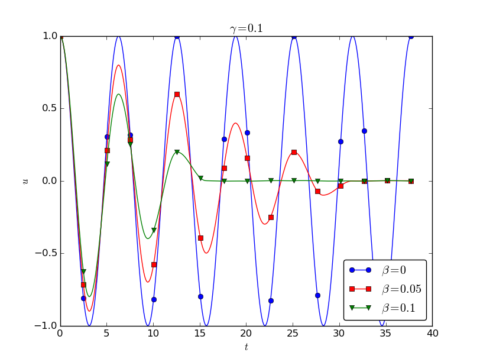
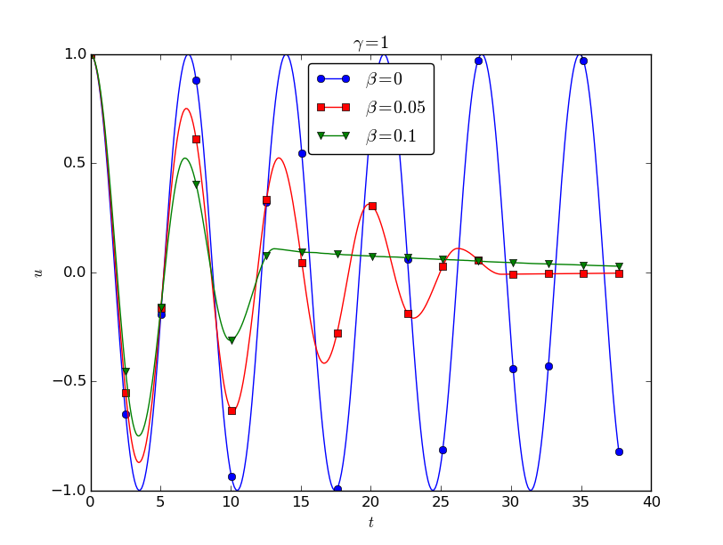
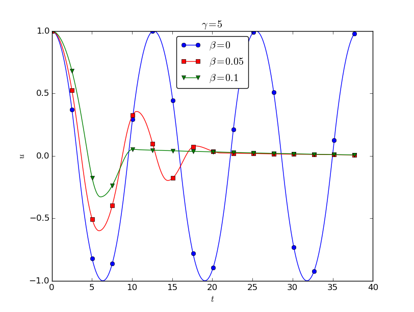
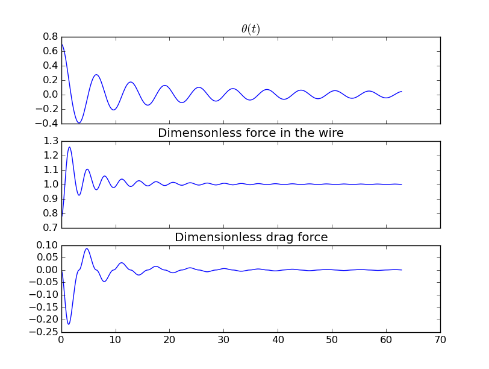

Generalization: damping, nonlinearities, and excitation
We shall now generalize the simple model problem from the section Finite difference discretization to include a possibly nonlinear damping term \( f(u^{\prime}) \), a possibly nonlinear spring (or restoring) force \( s(u) \), and some external excitation \( F(t) \): $$ \begin{equation} mu^{\prime\prime} + f(u^{\prime}) + s(u) = F(t),\quad u(0)=I,\ u^{\prime}(0)=V,\ t\in (0,T] \tp \tag{75} \end{equation} $$ We have also included a possibly nonzero initial value of \( u^{\prime}(0) \). The parameters \( m \), \( f(u^{\prime}) \), \( s(u) \), \( F(t) \), \( I \), \( V \), and \( T \) are input data.
There are two main types of damping (friction) forces: linear \( f(u^{\prime})=bu \), or quadratic \( f(u^{\prime})=bu^{\prime}|u^{\prime}| \). Spring systems often feature linear damping, while air resistance usually gives rise to quadratic damping. Spring forces are often linear: \( s(u)=cu \), but nonlinear versions are also common, the most famous is the gravity force on a pendulum that acts as a spring with \( s(u)\sim \sin(u) \).
A centered scheme for linear damping
Sampling (75) at a mesh point \( t_n \), replacing \( u^{\prime\prime}(t_n) \) by \( [D_tD_tu]^n \), and \( u^{\prime}(t_n) \) by \( [D_{2t}u]^n \) results in the discretization $$ \begin{equation} [mD_tD_t u + f(D_{2t}u) + s(u) = F]^n, \tag{76} \end{equation} $$ which written out means $$ \begin{equation} m\frac{u^{n+1}-2u^n + u^{n-1}}{\Delta t^2} + f(\frac{u^{n+1}-u^{n-1}}{2\Delta t}) + s(u^n) = F^n, \tag{77} \end{equation} $$ where \( F^n \) as usual means \( F(t) \) evaluated at \( t=t_n \). Solving (77) with respect to the unknown \( u^{n+1} \) gives a problem: the \( u^{n+1} \) inside the \( f \) function makes the equation nonlinear unless \( f(u^{\prime}) \) is a linear function, \( f(u^{\prime})=bu^{\prime} \). For now we shall assume that \( f \) is linear in \( u^{\prime} \). Then $$ \begin{equation} m\frac{u^{n+1}-2u^n + u^{n-1}}{\Delta t^2} + b\frac{u^{n+1}-u^{n-1}}{2\Delta t} + s(u^n) = F^n, \tag{78} \end{equation} $$ which gives an explicit formula for \( u \) at each new time level: $$ \begin{equation} u^{n+1} = (2mu^n + (\frac{b}{2}\Delta t - m)u^{n-1} + \Delta t^2(F^n - s(u^n)))(m + \frac{b}{2}\Delta t)^{-1} \tag{79} \tp \end{equation} $$
For the first time step we need to discretize \( u^{\prime}(0)=V \) as \( [D_{2t}u = V]^0 \) and combine with (79) for \( n=0 \). The discretized initial condition leads to $$ \begin{equation} u^{-1} = u^{1} - 2\Delta t V, \tag{80} \end{equation} $$ which inserted in (79) for \( n=0 \) gives an equation that can be solved for \( u^1 \): $$ \begin{equation} u^1 = u^0 + \Delta t\, V + \frac{\Delta t^2}{2m}(-bV - s(u^0) + F^0) \tp \tag{81} \end{equation} $$
A centered scheme for quadratic damping
When \( f(u^{\prime})=bu^{\prime}|u^{\prime}| \), we get a quadratic equation for \( u^{n+1} \) in (77). This equation can be straightforwardly solved by the well-known formula for the roots of a quadratic equation. However, we can also avoid the nonlinearity by introducing an approximation with an error of order no higher than what we already have from replacing derivatives with finite differences.
We start with (75) and only replace \( u^{\prime\prime} \) by \( D_tD_tu \), resulting in $$ \begin{equation} [mD_tD_t u + bu^{\prime}|u^{\prime}| + s(u) = F]^n\tp \tag{82} \end{equation} $$ Here, \( u^{\prime}|u^{\prime}| \) is to be computed at time \( t_n \). The idea is now to introduce a geometric mean, defined by $$ (w^2)^n \approx w^{n-\half}w^{n+\half},$$ for some quantity \( w \) depending on time. The error in the geometric mean approximation is \( \Oof{\Delta t^2} \), the same as in the approximation \( u^{\prime\prime}\approx D_tD_tu \). With \( w=u^{\prime} \) it follows that $$ [u^{\prime}|u^{\prime}|]^n \approx u^{\prime}(t_{n+\half})|u^{\prime}(t_{n-\half})|\tp$$ The next step is to approximate \( u^{\prime} \) at \( t_{n\pm 1/2} \), and fortunately a centered difference fits perfectly into the formulas since it involves \( u \) values at the mesh points only. With the approximations $$ \begin{equation} u^{\prime}(t_{n+1/2})\approx [D_t u]^{n+\half},\quad u^{\prime}(t_{n-1/2})\approx [D_t u]^{n-\half}, \tag{83} \end{equation} $$ we get $$ \begin{equation} [u^{\prime}|u^{\prime}|]^n \approx [D_tu]^{n+\half}|[D_tu]^{n-\half}| = \frac{u^{n+1}-u^n}{\Delta t} \frac{|u^n-u^{n-1}|}{\Delta t} \tp \tag{84} \end{equation} $$ The counterpart to (77) is then $$ \begin{equation} m\frac{u^{n+1}-2u^n + u^{n-1}}{\Delta t^2} + b\frac{u^{n+1}-u^n}{\Delta t}\frac{|u^n-u^{n-1}|}{\Delta t} + s(u^n) = F^n, \tag{85} \end{equation} $$ which is linear in the unknown \( u^{n+1} \). Therefore, we can easily solve (85) with respect to \( u^{n+1} \) and achieve the explicit updating formula $$ \begin{align} u^{n+1} &= \left( m + b|u^n-u^{n-1}|\right)^{-1}\times \nonumber\\ & \qquad \left(2m u^n - mu^{n-1} + bu^n|u^n-u^{n-1}| + \Delta t^2 (F^n - s(u^n)) \right) \tp \tag{86} \end{align} $$
In the derivation of a special equation for the first time step we run into some trouble: inserting (80) in (86) for \( n=0 \) results in a complicated nonlinear equation for \( u^1 \). By thinking differently about the problem we can easily get away with the nonlinearity again. We have for \( n=0 \) that \( b[u^{\prime}|u^{\prime}|]^0 = bV|V| \). Using this value in (82) gives $$ \begin{equation} [mD_tD_t u + bV|V| + s(u) = F]^0 \tp \tag{87} \end{equation} $$ Writing this equation out and using (80) results in the special equation for the first time step: $$ \begin{equation} u^1 = u^0 + \Delta t V + \frac{\Delta t^2}{2m}\left(-bV|V| - s(u^0) + F^0\right) \tp \tag{88} \end{equation} $$
A forward-backward discretization of the quadratic damping term
The previous section first proposed to discretize the quadratic damping term \( |u^{\prime}|u^{\prime} \) using centered differences: \( [|D_{2t}|D_{2t}u]^n \). As this gives rise to a nonlinearity in \( u^{n+1} \), it was instead proposed to use a geometric mean combined with centered differences. But there are other alternatives. To get rid of the nonlinearity in \( [|D_{2t}|D_{2t}u]^n \), one can think differently: apply a backward difference to \( |u^{\prime}| \), such that the term involves known values, and apply a forward difference to \( u^{\prime} \) to make the term linear in the unknown \( u^{n+1} \). With mathematics, $$ \begin{equation} [\beta |u^{\prime}|u^{\prime}]^n \approx \beta |[D_t^-u]^n|[D_t^+ u]^n = \beta\left\vert\frac{u^n-u^{n-1}}{\Delta t}\right\vert \frac{u^{n+1}-u^n}{\Delta t}\tp \tag{89} \end{equation} $$ The forward and backward differences have both an error proportional to \( \Delta t \) so one may think the discretization above leads to a first-order scheme. However, by looking at the formulas, we realize that the forward-backward differences in (89) result in exactly the same scheme as in (85) where we used a geometric mean and centered differences and committed errors of size \( \Oof{\Delta t^2} \). Therefore, the forward-backward differences in (89) act in a symmetric way and actually produce a second-order accurate discretization of the quadratic damping term.
Implementation
The algorithm arising from the methods in the sections A centered scheme for linear damping and A centered scheme for quadratic damping is very similar to the undamped case in the section A centered finite difference scheme. The difference is basically a question of different formulas for \( u^1 \) and \( u^{n+1} \). This is actually quite remarkable. The equation (75) is normally impossible to solve by pen and paper, but possible for some special choices of \( F \), \( s \), and \( f \). On the contrary, the complexity of the nonlinear generalized model (75) versus the simple undamped model is not a big deal when we solve the problem numerically!
The computational algorithm takes the form
- \( u^0=I \)
- compute \( u^1 \) from (81) if linear damping or (88) if quadratic damping
- for \( n=1,2,\ldots,N_t-1 \):
- compute \( u^{n+1} \) from (79) if linear damping or (86) if quadratic damping
solver function for the undamped case is fairly
easy, the big difference being many more terms and if tests on
the type of damping:
def solver(I, V, m, b, s, F, dt, T, damping='linear'):
"""
Solve m*u'' + f(u') + s(u) = F(t) for t in (0,T],
u(0)=I and u'(0)=V,
by a central finite difference method with time step dt.
If damping is 'linear', f(u')=b*u, while if damping is
'quadratic', f(u')=b*u'*abs(u').
F(t) and s(u) are Python functions.
"""
dt = float(dt); b = float(b); m = float(m) # avoid integer div.
Nt = int(round(T/dt))
u = np.zeros(Nt+1)
t = np.linspace(0, Nt*dt, Nt+1)
u[0] = I
if damping == 'linear':
u[1] = u[0] + dt*V + dt**2/(2*m)*(-b*V - s(u[0]) + F(t[0]))
elif damping == 'quadratic':
u[1] = u[0] + dt*V + \
dt**2/(2*m)*(-b*V*abs(V) - s(u[0]) + F(t[0]))
for n in range(1, Nt):
if damping == 'linear':
u[n+1] = (2*m*u[n] + (b*dt/2 - m)*u[n-1] +
dt**2*(F(t[n]) - s(u[n])))/(m + b*dt/2)
elif damping == 'quadratic':
u[n+1] = (2*m*u[n] - m*u[n-1] + b*u[n]*abs(u[n] - u[n-1])
+ dt**2*(F(t[n]) - s(u[n])))/\
(m + b*abs(u[n] - u[n-1]))
return u, t
The complete code resides in the file vib.py.
Verification
Constant solution
For debugging and initial verification, a constant solution is often
very useful. We choose \( \uex(t)=I \), which implies \( V=0 \).
Inserted in the ODE, we get
\( F(t)=s(I) \) for any choice of \( f \). Since the discrete derivative
of a constant vanishes (in particular, \( [D_{2t}I]^n=0 \),
\( [D_tI]^n=0 \), and \( [D_tD_t I]^n=0 \)), the constant solution also fulfills
the discrete equations. The constant should therefore be reproduced
to machine precision. The function test_constant in vib.py
implements this test.
Linear solution
Now we choose a linear solution: \( \uex = ct + d \). The initial condition \( u(0)=I \) implies \( d=I \), and \( u^{\prime}(0)=V \) forces \( c \) to be \( V \). Inserting \( \uex=Vt+I \) in the ODE with linear damping results in $$ 0 + bV + s(Vt+I) = F(t),$$ while quadratic damping requires the source term $$ 0 + b|V|V + s(Vt+I) = F(t)\tp$$ Since the finite difference approximations used to compute \( u^{\prime} \) all are exact for a linear function, it turns out that the linear \( \uex \) is also a solution of the discrete equations. Exercise 10: Use linear/quadratic functions for verification asks you to carry out all the details.
Quadratic solution
Choosing \( \uex = bt^2 + Vt + I \), with \( b \) arbitrary, fulfills the initial conditions and fits the ODE if \( F \) is adjusted properly. The solution also solves the discrete equations with linear damping. However, this quadratic polynomial in \( t \) does not fulfill the discrete equations in case of quadratic damping, because the geometric mean used in the approximation of this term introduces an error. Doing Exercise 10: Use linear/quadratic functions for verification will reveal the details. One can fit \( F^n \) in the discrete equations such that the quadratic polynomial is reproduced by the numerical method (to machine precision).
Catching bugs
How good are the constant and quadratic solutions at catching bugs in the implementation?
- Use
minstead of2*min the denominator ofu[1]: constant works, while quadratic fails. - Use
b*dtinstead ofb*dt/2in the updating formula foru[n+1]in case of linear damping: constant and quadratic fail. - Use
F[n+1]instead ofF[n]in case of linear or quadratic damping: constant solution works, quadratic fails.
Visualization
The functions for visualizations differ significantly from
those in the undamped case in the vib_undamped.py program because,
in the present general case, we do not have an exact solution to
include in the plots. Moreover, we have no good estimate of
the periods of the oscillations as there will be one period
determined by the system parameters, essentially the
approximate frequency \( \sqrt{s'(0)/m} \) for linear \( s \) and small damping,
and one period dictated by \( F(t) \) in case the excitation is periodic.
This is, however,
nothing that the program can depend on or make use of.
Therefore, the user has to specify \( T \) and the window width
to get a plot that moves with the graph and shows
the most recent parts of it in long time simulations.
The vib.py code
contains several functions for analyzing the time series signal
and for visualizing the solutions.
User interface
The main function is changed substantially from
the vib_undamped.py code, since we need to
specify the new data \( c \), \( s(u) \), and \( F(t) \). In addition, we must
set \( T \) and the plot window width (instead of the number of periods we
want to simulate as in vib_undamped.py). To figure out whether we
can use one plot for the whole time series or if we should follow the
most recent part of \( u \), we can use the plot_empricial_freq_and_amplitude
function's estimate of the number of local maxima. This number is now
returned from the function and used in main to decide on the
visualization technique.
def main():
import argparse
parser = argparse.ArgumentParser()
parser.add_argument('--I', type=float, default=1.0)
parser.add_argument('--V', type=float, default=0.0)
parser.add_argument('--m', type=float, default=1.0)
parser.add_argument('--c', type=float, default=0.0)
parser.add_argument('--s', type=str, default='u')
parser.add_argument('--F', type=str, default='0')
parser.add_argument('--dt', type=float, default=0.05)
parser.add_argument('--T', type=float, default=140)
parser.add_argument('--damping', type=str, default='linear')
parser.add_argument('--window_width', type=float, default=30)
parser.add_argument('--savefig', action='store_true')
a = parser.parse_args()
from scitools.std import StringFunction
s = StringFunction(a.s, independent_variable='u')
F = StringFunction(a.F, independent_variable='t')
I, V, m, c, dt, T, window_width, savefig, damping = \
a.I, a.V, a.m, a.c, a.dt, a.T, a.window_width, a.savefig, \
a.damping
u, t = solver(I, V, m, c, s, F, dt, T)
num_periods = empirical_freq_and_amplitude(u, t)
if num_periods <= 15:
figure()
visualize(u, t)
else:
visualize_front(u, t, window_width, savefig)
show()
The program vib.py contains
the above code snippets and can solve the model problem
(75). As a demo of vib.py, we consider the case
\( I=1 \), \( V=0 \), \( m=1 \), \( c=0.03 \), \( s(u)=\sin(u) \), \( F(t)=3\cos(4t) \),
\( \Delta t = 0.05 \), and \( T=140 \). The relevant command to run is
Terminal> python vib.py --s 'sin(u)' --F '3*cos(4*t)' --c 0.03
This results in a moving window following the function on the screen. Figure 17 shows a part of the time series.
Figure 17: Damped oscillator excited by a sinusoidal function.

The Euler-Cromer scheme for the generalized model
The ideas of the Euler-Cromer method from the section The Euler-Cromer method carry over to the generalized model. We write (75) as two equations for \( u \) and \( v=u^{\prime} \). The first equation is taken as the one with \( v^{\prime} \) on the left-hand side: $$ \begin{align} v^{\prime} &= \frac{1}{m}(F(t)-s(u)-f(v)), \tag{90}\\ u^{\prime} &= v\tp \tag{91} \end{align} $$ The idea is to step (90) forward using a standard Forward Euler method, while we update \( u \) from (91) with a Backward Euler method, utilizing the recent, computed \( v^{n+1} \) value. In detail, $$ \begin{align} \frac{v^{n+1}-v^n}{\Delta t} &= \frac{1}{m}(F(t_n)-s(u^n)-f(v^n)), \tag{92}\\ \frac{u^{n+1}-u^n}{\Delta t} &= v^{n+1}, \tag{93} \end{align} $$ resulting in the explicit scheme $$ \begin{align} v^{n+1} &= v^n + \Delta t\frac{1}{m}(F(t_n)-s(u^n)-f(v^n)), \tag{94}\\ u^{n+1} &= u^n + \Delta t\,v^{n+1}\tp \tag{95} \end{align} $$ We immediately note one very favorable feature of this scheme: all the nonlinearities in \( s(u) \) and \( f(v) \) are evaluated at a previous time level. This makes the Euler-Cromer method easier to apply and hence much more convenient than the centered scheme for the second-order ODE (75).
The initial conditions are trivially set as $$ \begin{align} v^0 &= V, \tag{96}\\ u^0 &= I\tp \tag{97} \end{align} $$
The Stoermer-Verlet algorithm for the generalized model
We can easily apply the ideas from the section The Stoermer-Verlet algorithm to extend that method to the generalized model $$ \begin{align*} v^{\prime} &= \frac{1}{m}(F(t)-s(u)-f(v)),\\ u^{\prime} &= v\tp \end{align*} $$ However, since the scheme is essentially centered differences for the ODE system on a staggered mesh, we do not go into detail here, but refer to the section A staggered Euler-Cromer scheme for a generalized model.
A staggered Euler-Cromer scheme for a generalized model
The more general model for vibration problems, $$ \begin{equation} mu'' + f(u') + s(u) = F(t),\quad u(0)=I,\ u'(0)=V,\ t\in (0,T], \tag{98} \end{equation} $$ can be rewritten as a first-order ODE system $$ \begin{align} v' &= m^{-1}\left(F(t) - f(v) - s(u)\right), \tag{99}\\ u' &= v\tp \tag{100} \end{align} $$ It is natural to introduce a staggered mesh (see the section The Euler-Cromer scheme on a staggered mesh) and seek \( u \) at mesh points \( t_n \) (the numerical value is denoted by \( u^n \)) and \( v \) between mesh points at \( t_{n+1/2} \) (the numerical value is denoted by \( v^{n+\half} \)). A centered difference approximation to (100)-(99) can then be written in operator notation as $$ \begin{align} \lbrack D_tv &= m^{-1}\left(F(t) - f(v) - s(u)\right)\rbrack^n, \tag{101}\\ \lbrack D_t u &= v\rbrack^{n+\half}\tp \tag{102} \end{align} $$ Written out, $$ \begin{align} \frac{v^{n+\half} - v^{n-\half}}{\Delta t} &= m^{-1}\left(F^n - f(v^n) - s(u^n)\right), \tag{103}\\ \frac{u^n - u^{n-1}}{\Delta t} &= v^{n+\half}\tp \tag{104} \end{align} $$
With linear damping, \( f(v)=bv \), we can use an arithmetic mean for \( f(v^n) \): \( f(v^n)\approx = \half(f(v^{n-\half}) + f(v^{n+\half})) \). The system (103)-(104) can then be solved with respect to the unknowns \( u^n \) and \( v^{n+\half} \): $$ \begin{align} v^{n+\half} &= \left(1 + \frac{b}{2m}\Delta t\right)^{-1}\left( v^{n-\half} + {\Delta t} m^{-1}\left(F^n - {\half}f(v^{n-\half}) - s(u^n)\right)\right), \tag{105}\\ u^n & = u^{n-1} + {\Delta t}v^{n-\half}\tp \tag{106} \end{align} $$
In case of quadratic damping, \( f(v)=b|v|v \), we can use a geometric mean: \( f(v^n)\approx b|v^{n-\half}|v^{n+\half} \). Inserting this approximation in (103)-(104) and solving for the unknowns \( u^n \) and \( v^{n+\half} \) results in $$ \begin{align} v^{n+\half} &= (1 + \frac{b}{m}|v^{n-\half}|\Delta t)^{-1}\left( v^{n-\half} + {\Delta t} m^{-1}\left(F^n - s(u^n)\right)\right), \tag{107}\\ u^n & = u^{n-1} + {\Delta t}v^{n-\half}\tp \tag{108} \end{align} $$
The initial conditions are derived at the end of the section The Euler-Cromer scheme on a staggered mesh: $$ \begin{align} u^0 &= I, \tag{109}\\ v^\half &= V - \half\Delta t\omega^2I \tag{110}\tp \end{align} $$
The PEFRL 4th-order accurate algorithm
A variant of the Euler-Cromer type of algorithm, which provides an error \( \Oof{\Delta t^4} \) if \( f(v)=0 \), is called PEFRL [4]. This algorithm is very well suited for integrating dynamic systems (especially those without damping) over very long time periods. Define $$ g(u,v) = \frac{1}{m}(F(t)-s(u)-f(v))\tp$$ The algorithm is explicit and features these simple steps: $$ \begin{align} u^{n+1,1} &= u^n + \xi\Delta t v^n, \tag{111}\\ v^{n+1,1} &= v^n + \half(1-2\lambda)\Delta t g(u^{n+1,1},v^n), \tag{112}\\ u^{n+1,2} &= u^{n+1,1} + \chi\Delta t v^{n+1,1}, \tag{113}\\ v^{n+1,2} &= v^{n+1,1} + \lambda\Delta t g(u^{n+1,2}, v^{n+1,1}), \tag{114}\\ u^{n+1,3} &= u^{n+1,2} + (1-2(\chi + \xi))\Delta t v^{n+1,2}, \tag{115}\\ v^{n+1,3} &= v^{n+1,2} + \lambda\Delta t g(u^{n+1,3}, v^{n+1,2}), \tag{116}\\ u^{n+1,4} &= u^{n+1,3} + \chi\Delta t v^{n+1,3}, \tag{117}\\ v^{n+1} &= v^{n+1,3} + \half(1-2\lambda)\Delta t g(u^{n+1,4},v^{n+1,3}), \tag{118}\\ u^{n+1} &= u^{n+1,4} + \xi\Delta t v^{n+1} \tag{119} \end{align} $$ The parameters \( \xi \), \( \lambda \), and \( \xi \) have the values $$ \begin{align} \xi &= 0.1786178958448091, \tag{120}\\ \lambda &= -0.2123418310626054, \tag{121}\\ \chi &= -0.06626458266981849 \tag{122} \end{align} $$
Exercises and Problems
Exercise 19: Implement the solver via classes
Reimplement the vib.py program using a class Problem to hold all
the physical parameters of the problem, a class Solver to hold the
numerical parameters and compute the solution, and a class
Visualizer to display the solution.
Use the ideas and examples for an ODE
model
in [1]. More specifically, make a superclass
Problem for holding the scalar physical parameters of a problem and
let subclasses implement the \( s(u) \) and \( F(t) \) functions as methods.
Try to call up as much existing functionality in vib.py as possible.
The complete code looks like this.
# Reimplementation of vib.py using classes
import numpy as np
import scitools.std as plt
import sympy as sym
from vib import solver as vib_solver
from vib import visualize as vib_visualize
from vib import visualize_front as vib_visualize_front
from vib import visualize_front_ascii as vib_visualize_front_ascii
from vib import plot_empirical_freq_and_amplitude as \
vib_plot_empirical_freq_and_amplitude
class Vibration:
'''
Problem: m*u'' + f(u') + s(u) = F(t) for t in (0,T],
u(0)=I and u'(0)=V. The problem is solved
by a central finite difference method with time step dt.
If damping is 'linear', f(u')=b*u, while if damping is
'quadratic', f(u')=b*u'*abs(u'). Zero damping is achieved
with b=0. F(t) and s(u) are Python functions.
'''
def __init__(self, I=1, V=0, m=1, b=0, damping='linear'):
self.I = I; self.V = V; self.m = m; self.b=b;
self.damping = damping
def s(self, u):
return u
def F(self, t):
'''Driving force. Zero implies free oscillations'''
return 0
class Free_vibrations(Vibration):
'''F(t) = 0'''
def __init__(self, s=None, I=1, V=0, m=1, b=0, damping='linear'):
Vibration.__init__(self, I=I, V=V, m=m, b=b, damping=damping)
if s != None:
self.s = s
class Forced_vibrations(Vibration):
'''F(t)! = 0'''
def __init__(self, F, s=None, I=1, V=0, m=1, b=0,
damping='linear'):
Vibration.__init__(self, I=I, V=V, m=m, b=b,
damping=damping)
if s != None:
self.s = s
self.F = F
class Solver:
def __init__(self, dt=0.05, T=20):
self.dt = dt; self.T = T
def solve(self, problem):
self.u, self.t = vib_solver(
problem.I, problem.V,
problem.m, problem.b,
problem.s, problem.F,
self.dt, self.T, problem.damping)
class Visualizer:
def __init__(self, problem, solver, window_width, savefig):
self.problem = problem; self.solver = solver
self.window_width = window_width; self.savefig = savefig
def visualize(self):
u = self.solver.u; t = self.solver.t # short forms
num_periods = vib_plot_empirical_freq_and_amplitude(u, t)
if num_periods <= 40:
plt.figure()
vib_visualize(u, t)
else:
vib_visualize_front(u, t, self.window_width, self.savefig)
vib_visualize_front_ascii(u, t)
plt.show()
def main():
# Note: the reading of parameter values would better be done
# from each relevant class, i.e. class Problem should read I, V,
# etc., while class Solver should read dt and T, and so on.
# Consult, e.g., Langtangen: "A Primer on Scientific Programming",
# App E.
import argparse
parser = argparse.ArgumentParser()
parser.add_argument('--I', type=float, default=1.0)
parser.add_argument('--V', type=float, default=0.0)
parser.add_argument('--m', type=float, default=1.0)
parser.add_argument('--b', type=float, default=0.0)
parser.add_argument('--s', type=str, default=None)
parser.add_argument('--F', type=str, default='0')
parser.add_argument('--dt', type=float, default=0.05)
parser.add_argument('--T', type=float, default=20)
parser.add_argument('--window_width', type=float, default=30.,
help='Number of periods in a window')
parser.add_argument('--damping', type=str, default='linear')
parser.add_argument('--savefig', action='store_true')
# Hack to allow --SCITOOLS options
# (scitools.std reads this argument at import)
parser.add_argument('--SCITOOLS_easyviz_backend',
default='matplotlib')
a = parser.parse_args()
from scitools.std import StringFunction
if a.s != None:
s = StringFunction(a.s, independent_variable='u')
else:
s = None
F = StringFunction(a.F, independent_variable='t')
if a.F == '0': # free vibrations
problem = Free_vibrations(s=s, I=a.I, V=a.V, m=a.m, b=a.b,
damping=a.damping)
else: # forced vibrations
problem = Forced_vibrations(lambda t: np.sin(t),
s=s, I=a.I, V=a.V,
m=a.m, b=a.b, damping=a.damping)
solver = Solver(dt=a.dt, T=a.T)
solver.solve(problem)
visualizer = Visualizer(problem, solver,
a.window_width, a.savefig)
visualizer.visualize()
if __name__ == '__main__':
main()
Filename: vib_class.
Problem 20: Use a backward difference for the damping term
As an alternative to discretizing the damping terms \( \beta u^{\prime} \) and \( \beta |u^{\prime}|u^{\prime} \) by centered differences, we may apply backward differences: $$ \begin{align*} [u^{\prime}]^n &\approx [D_t^-u]^n,\\ & [|u^{\prime}|u^{\prime}]^n\\ &\approx [|D_t^-u|D_t^-u]^n\\ &= |[D_t^-u]^n|[D_t^-u]^n\tp \end{align*} $$ The advantage of the backward difference is that the damping term is evaluated using known values \( u^n \) and \( u^{n-1} \) only. Extend the vib.py code with a scheme based on using backward differences in the damping terms. Add statements to compare the original approach with centered difference and the new idea launched in this exercise. Perform numerical experiments to investigate how much accuracy that is lost by using the backward differences.
The new discretization approach of the linear and quadratic damping terms calls for new derivations of the updating formulas (for \( u \)) in the solver. Since backward difference approximations will be used for the damping term, we may also use this approximation for the initial condition on \( u^{\prime}(0) \) without deteriorating the convergence rate any further. Note that introducing backward difference approximations for the damping term make our computational schemes first order, as opposed to the original second order schemes which used central difference approximations also for the damping terms. The motivation for also using a backward difference approximation for the initial condition on \( u^{\prime}(0) \), is simply that the computational schemes get much simpler.
With linear damping, the new discretized form of the equation reads
$$
\begin{equation*}
m\frac{u^{n+1}-2u^n+u^{n-1}}{\Delta t^2} + b\frac{u^n - u^{n-1}}{\Delta t} + s(u^n) = F^n,
\nonumber
\end{equation*}
$$
which gives us
$$
\begin{equation*}
u^{n+1} = \left(2-\frac{\Delta t b}{m}\right)u^n + \frac{\Delta t^2}{m}\left(F^n - s(u^n)\right) + \left(\frac{\Delta t b}{m} - 1\right)u^{n-1}.
\nonumber
\end{equation*}
$$
With \( n=0 \), the updating formula becomes
$$
\begin{equation*}
u^1 = \left(2-\frac{\Delta t b}{m}\right)u^0 + \frac{\Delta t^2}{m}\left(F^0 - s(u^0)\right) + \left(\frac{\Delta t b}{m} - 1\right)u^{-1},
\nonumber
\end{equation*}
$$
which requires some further elaboration because of the unknown \( u^{-1} \). We handle this by discretizing the initial condition \( u^{\prime}(0) = V \) by a backward difference approximation as
$$
\begin{equation*}
\frac{u^0 - u^{-1}}{\Delta t} = V,
\nonumber
\end{equation*}
$$
which implies that
$$
\begin{equation*}
u^{-1} = u^0 - \Delta t V.
\nonumber
\end{equation*}
$$
Inserting this expression for \( u^{-1} \) in the updating formula for \( u^{n+1} \), and simplifying,
gives us the following special formula for the first time step:
$$
\begin{equation*}
u^1 = u^0 + \Delta t V + \frac{\Delta t^2}{m}\left(-bV - s(u^0) + F^0\right).
\nonumber
\end{equation*}
$$
Switching to quadratic damping, the new discretized form of the equations becomes
$$
\begin{equation*}
m\frac{u^{n+1}-2u^n+u^{n-1}}{\Delta t^2} + b|\frac{u^n - u^{n-1}}{\Delta t}|\frac{u^n - u^{n-1}}{\Delta t} + s(u^n) = F^n,
\nonumber
\end{equation*}
$$
which leads to
$$
\begin{equation*}
u^{n+1} = 2u^n - u^{n-1} - \frac{b}{m}|u^n - u^{n-1}|(u^n - u^{n-1}) + \frac{\Delta t^2}{m}\left(F^n - s(u^n)\right).
\nonumber
\end{equation*}
$$
With \( n=0 \), this updating formula becomes
$$
\begin{equation*}
u^1 = 2u^0 - u^{-1} - \frac{b}{m}|u^0 - u^{-1}|(u^0 - u^{-1}) + \frac{\Delta t^2}{m}\left(F^0 - s(u^0)\right).
\nonumber
\end{equation*}
$$
Again, we handle the unknown \( u^{-1} \) via the same expression as above, which be derived from a backward difference approximation to the initial condition on the derivative. Inserting this expression for \( u^{-1} \) and simplifying, gives the special updating formula for \( u^1 \) as
$$
\begin{equation*}
u^1 = u^0 + \Delta t V + \frac{\Delta t^2}{m}\left(-b|V|V - s(u^0) + F^0\right).
\nonumber
\end{equation*}
$$
We implement these new computational schemes in a new solver function
solver_bwdamping, so that the discrete solution for \( u \) can be found
by both the original and the new solver. The difference between the
two different solutions is then visualized in the same way as the
original solution in main.
The convergence rates computed in test_mms demonstrates that our
scheme now is a first order scheme, as \( r \) is seen to approach 1.0
with decreasing \( \Delta t \).
Both solvers reproduce a constant solution exactly (within machine precision), whereas sinusoidal and quadratic solutions differ, as should be expected after comparing the schemes. Pointing out the "best" approach is difficult: the backward differences yield a much simpler mathematical problem to be solved, while the more complicated method converges faster and gives more accuracy for the same cost. On the other hand, the backward differences can yield any reasonable accuracy by lowering \( \Delta t \), and the results are obtained within a few seconds on a laptop.
Here is the complete computer code, arising from copying vib.py and changing
the functions that have to be changed:
import numpy as np
#import matplotlib.pyplot as plt
import scitools.std as plt
def solver_bwdamping(I, V, m, b, s, F, dt, T, damping='linear'):
"""
Solve m*u'' + f(u') + s(u) = F(t) for t in (0,T],
u(0)=I and u'(0)=V. All terms except damping is discretized
by a central finite difference method with time step dt.
The damping term is discretized by a backward diff. approx.,
as is the init.cond. u'(0). If damping is 'linear', f(u')=b*u,
while if damping is 'quadratic', f(u')=b*u'*abs(u').
F(t) and s(u) are Python functions.
"""
dt = float(dt); b = float(b); m = float(m) # avoid integer div.
Nt = int(round(T/dt))
u = np.zeros(Nt+1)
t = np.linspace(0, Nt*dt, Nt+1)
u_original = np.zeros(Nt+1); u_original[0] = I # for testing
u[0] = I
if damping == 'linear':
u[1] = u[0] + dt*V + dt**2/m*(-b*V - s(u[0]) + F(t[0]))
elif damping == 'quadratic':
u[1] = u[0] + dt*V + \
dt**2/m*(-b*V*abs(V) - s(u[0]) + F(t[0]))
for n in range(1, Nt):
if damping == 'linear':
u[n+1] = (2 - dt*b/m)*u[n] + dt**2/m*(- s(u[n]) + \
F(t[n])) + (dt*b/m - 1)*u[n-1]
elif damping == 'quadratic':
u[n+1] = 2*u[n] - u[n-1] - b/m*abs(u[n] - \
u[n-1])*(u[n] - u[n-1]) + dt**2/m*(-s(u[n]) + F(t[n]))
return u, t
import sympy as sym
def test_constant():
"""Verify a constant solution."""
u_exact = lambda t: I
I = 1.2; V = 0; m = 2; b = 0.9
w = 1.5
s = lambda u: w**2*u
F = lambda t: w**2*u_exact(t)
dt = 0.2
T = 2
#u, t = solver(I, V, m, b, s, F, dt, T, 'linear')
u, t = solver_bwdamping(I, V, m, b, s, F, dt, T, 'linear')
difference = np.abs(u_exact(t) - u).max()
print difference
tol = 1E-13
assert difference < tol
#u, t = solver(I, V, m, b, s, F, dt, T, 'quadratic')
u, t = solver_bwdamping(I, V, m, b, s, F, dt, T, 'quadratic')
difference = np.abs(u_exact(t) - u).max()
print difference
assert difference < tol
def lhs_eq(t, m, b, s, u, damping='linear'):
"""Return lhs of differential equation as sympy expression."""
v = sym.diff(u, t)
if damping == 'linear':
return m*sym.diff(u, t, t) + b*v + s(u)
else:
return m*sym.diff(u, t, t) + b*v*sym.Abs(v) + s(u)
def test_quadratic():
"""Verify a quadratic solution."""
I = 1.2; V = 3; m = 2; b = 0.9
s = lambda u: 4*u
t = sym.Symbol('t')
dt = 0.2
T = 2
q = 2 # arbitrary constant
u_exact = I + V*t + q*t**2
F = sym.lambdify(t, lhs_eq(t, m, b, s, u_exact, 'linear'))
u_exact = sym.lambdify(t, u_exact, modules='numpy')
#u1, t1 = solver(I, V, m, b, s, F, dt, T, 'linear')
u1, t1 = solver_bwdamping(I, V, m, b, s, F, dt, T, 'linear')
diff = np.abs(u_exact(t1) - u1).max()
print diff
tol = 1E-13
#assert diff < tol
# In the quadratic damping case, u_exact must be linear
# in order to exactly recover this solution
u_exact = I + V*t
F = sym.lambdify(t, lhs_eq(t, m, b, s, u_exact, 'quadratic'))
u_exact = sym.lambdify(t, u_exact, modules='numpy')
#u2, t2 = solver(I, V, m, b, s, F, dt, T, 'quadratic')
u2, t2 = solver_bwdamping(I, V, m, b, s, F, dt, T, 'quadratic')
diff = np.abs(u_exact(t2) - u2).max()
print diff
assert diff < tol
def test_sinusoidal():
"""Verify a numerically exact sinusoidal solution when b=F=0."""
from math import asin
def u_exact(t):
w_numerical = 2/dt*np.arcsin(w*dt/2)
return I*np.cos(w_numerical*t)
I = 1.2; V = 0; m = 2; b = 0
w = 1.5 # fix the frequency
s = lambda u: m*w**2*u
F = lambda t: 0
dt = 0.2
T = 6
#u, t = solver(I, V, m, b, s, F, dt, T, 'linear')
u, t = solver_bwdamping(I, V, m, b, s, F, dt, T, 'linear')
diff = np.abs(u_exact(t) - u).max()
print diff
tol = 1E-14
#assert diff < tol
#u, t = solver(I, V, m, b, s, F, dt, T, 'quadratic')
u, t = solver_bwdamping(I, V, m, b, s, F, dt, T, 'quadratic')
print diff
diff = np.abs(u_exact(t) - u).max()
assert diff < tol
def test_mms():
"""Use method of manufactured solutions."""
m = 4.; b = 1
w = 1.5
t = sym.Symbol('t')
u_exact = 3*sym.exp(-0.2*t)*sym.cos(1.2*t)
I = u_exact.subs(t, 0).evalf()
V = sym.diff(u_exact, t).subs(t, 0).evalf()
u_exact_py = sym.lambdify(t, u_exact, modules='numpy')
s = lambda u: u**3
dt = 0.2
T = 6
errors_linear = []
errors_quadratic = []
# Run grid refinements and compute exact error
for i in range(5):
F_formula = lhs_eq(t, m, b, s, u_exact, 'linear')
F = sym.lambdify(t, F_formula)
#u1, t1 = solver(I, V, m, b, s, F, dt, T, 'linear')
u1, t1 = solver_bwdamping(I, V, m, b, s,
F, dt, T, 'linear')
error = np.sqrt(np.sum((u_exact_py(t1) - u1)**2)*dt)
errors_linear.append((dt, error))
F_formula = lhs_eq(t, m, b, s, u_exact, 'quadratic')
#print sym.latex(F_formula, mode='plain')
F = sym.lambdify(t, F_formula)
#u2, t2 = solver(I, V, m, b, s, F, dt, T, 'quadratic')
u2, t2 = solver_bwdamping(I, V, m, b, s,
F, dt, T, 'quadratic')
error = np.sqrt(np.sum((u_exact_py(t2) - u2)**2)*dt)
errors_quadratic.append((dt, error))
dt /= 2
# Estimate convergence rates
tol = 0.05
for errors in errors_linear, errors_quadratic:
for i in range(1, len(errors)):
dt, error = errors[i]
dt_1, error_1 = errors[i-1]
r = np.log(error/error_1)/np.log(dt/dt_1)
# check r for final simulation with (final and) smallest dt
# note that the method now is 1st order, i.e. r should
# approach 1.0
print r
assert abs(r - 1.0) < tol
import os, sys
sys.path.insert(0, os.path.join(os.pardir, 'src-vib'))
from vib import (plot_empirical_freq_and_amplitude,
visualize_front, visualize_front_ascii,
minmax, periods, amplitudes,
solver as solver2)
def visualize(list_of_curves, legends, title='', filename='tmp'):
"""Plot list of curves: (u, t)."""
for u, t in list_of_curves:
plt.plot(t, u)
plt.hold('on')
plt.legend(legends)
plt.xlabel('t')
plt.ylabel('u')
plt.title(title)
plt.savefig(filename + '.png')
plt.savefig(filename + '.pdf')
plt.show()
def main():
import argparse
parser = argparse.ArgumentParser()
parser.add_argument('--I', type=float, default=1.0)
parser.add_argument('--V', type=float, default=0.0)
parser.add_argument('--m', type=float, default=1.0)
parser.add_argument('--b', type=float, default=0.0)
parser.add_argument('--s', type=str, default='4*pi**2*u')
parser.add_argument('--F', type=str, default='0')
parser.add_argument('--dt', type=float, default=0.05)
parser.add_argument('--T', type=float, default=20)
parser.add_argument('--window_width', type=float, default=30.,
help='Number of periods in a window')
parser.add_argument('--damping', type=str, default='linear')
parser.add_argument('--savefig', action='store_true')
# Hack to allow --SCITOOLS options
# (scitools.std reads this argument at import)
parser.add_argument('--SCITOOLS_easyviz_backend',
default='matplotlib')
a = parser.parse_args()
from scitools.std import StringFunction
s = StringFunction(a.s, independent_variable='u')
F = StringFunction(a.F, independent_variable='t')
I, V, m, b, dt, T, window_width, savefig, damping = \
a.I, a.V, a.m, a.b, a.dt, a.T, a.window_width, a.savefig, \
a.damping
# compute u by both methods and then visualize the difference
u, t = solver2(I, V, m, b, s, F, dt, T, damping)
u_bw, _ = solver_bwdamping(I, V, m, b, s, F, dt, T, damping)
u_diff = u - u_bw
num_periods = plot_empirical_freq_and_amplitude(u_diff, t)
if num_periods <= 40:
plt.figure()
legends = ['1st-2nd order method',
'2nd order method',
'1st order method']
visualize([(u_diff, t), (u, t), (u_bw, t)], legends)
else:
visualize_front(u_diff, t, window_width, savefig)
#visualize_front_ascii(u_diff, t)
plt.show()
if __name__ == '__main__':
main()
#test_constant()
#test_sinusoidal()
#test_mms()
#test_quadratic()
raw_input()
Here is a comparison of standard method (2nd order) and backward differences for damping (1st order) for 10 (left) and 40 (right) time steps per period:

Filename: vib_gen_bwdamping.
Exercise 21: Use the forward-backward scheme with quadratic damping
We consider the generalized model with quadratic damping, expressed as a system of two first-order equations as in the section A staggered Euler-Cromer scheme for a generalized model: $$ \begin{align*} u^{\prime} &= v,\\ v' &= \frac{1}{m}\left( F(t) - \beta |v|v - s(u)\right)\tp \end{align*} $$ However, contrary to what is done in the section A staggered Euler-Cromer scheme for a generalized model, we want to apply the idea of a forward-backward discretization: \( u \) is marched forward by a one-sided Forward Euler scheme applied to the first equation, and thereafter \( v \) can be marched forward by a Backward Euler scheme in the second equation. Express the idea in operator notation and write out the scheme. Unfortunately, the backward difference for the \( v \) equation creates a nonlinearity \( |v^{n+1}|v^{n+1} \). To linearize this nonlinearity, use the known value \( v^n \) inside the absolute value factor, i.e., \( |v^{n+1}|v^{n+1}\approx |v^n|v^{n+1} \). Show that the resulting scheme is equivalent to the one in the section A staggered Euler-Cromer scheme for a generalized model for some time level \( n\geq 1 \).
What we learn from this exercise is that the first-order differences
and the linearization trick play together in "the right way" such that
the scheme is as good as when we (in the section A staggered Euler-Cromer scheme for a generalized model)
carefully apply centered differences and a geometric mean on a
staggered mesh to achieve second-order accuracy.
Filename: vib_gen_bwdamping.
Applications of vibration models
The following text derives some of the most well-known physical problems that lead to second-order ODE models of the type addressed in this document. We consider a simple spring-mass system; thereafter extended with nonlinear spring, damping, and external excitation; a spring-mass system with sliding friction; a simple and a physical (classical) pendulum; and an elastic pendulum.
Oscillating mass attached to a spring
Figure 18: Simple oscillating mass.

The most fundamental mechanical vibration system is depicted in Figure 18. A body with mass \( m \) is attached to a spring and can move horizontally without friction (in the wheels). The position of the body is given by the vector \( \rpos(t) = u(t)\ii \), where \( \ii \) is a unit vector in \( x \) direction. There is only one force acting on the body: a spring force \( \F_s =-ku\ii \), where \( k \) is a constant. The point \( x=0 \), where \( u=0 \), must therefore correspond to the body's position where the spring is neither extended nor compressed, so the force vanishes.
The basic physical principle that governs the motion of the body is Newton's second law of motion: \( \F=m\acc \), where \( \F \) is the sum of forces on the body, \( m \) is its mass, and \( \acc=\ddot\rpos \) is the acceleration. We use the dot for differentiation with respect to time, which is usual in mechanics. Newton's second law simplifies here to \( -\F_s=m\ddot u\ii \), which translates to $$ -ku = m\ddot u\tp$$ Two initial conditions are needed: \( u(0)=I \), \( \dot u(0)=V \). The ODE problem is normally written as $$ \begin{equation} m\ddot u + ku = 0,\quad u(0)=I,\ \dot u(0)=V\tp \tag{123} \end{equation} $$ It is not uncommon to divide by \( m \) and introduce the frequency \( \omega = \sqrt{k/m} \): $$ \begin{equation} \ddot u + \omega^2 u = 0,\quad u(0)=I,\ \dot u(0)=V\tp \tag{124} \end{equation} $$ This is the model problem in the first part of this chapter, with the small difference that we write the time derivative of \( u \) with a dot above, while we used \( u^{\prime} \) and \( u^{\prime\prime} \) in previous parts of the document.
Since only one scalar mathematical quantity, \( u(t) \), describes the complete motion, we say that the mechanical system has one degree of freedom (DOF).
Scaling
For numerical simulations it is very convenient to scale (124) and thereby get rid of the problem of finding relevant values for all the parameters \( m \), \( k \), \( I \), and \( V \). Since the amplitude of the oscillations are dictated by \( I \) and \( V \) (or more precisely, \( V/\omega \)), we scale \( u \) by \( I \) (or \( V/\omega \) if \( I=0 \)): $$ \bar u = \frac{u}{I},\quad \bar t = \frac{t}{t_c}\tp$$ The time scale \( t_c \) is normally chosen as the inverse period \( 2\pi/\omega \) or angular frequency \( 1/\omega \), most often as \( t_c=1/\omega \). Inserting the dimensionless quantities \( \bar u \) and \( \bar t \) in (124) results in the scaled problem $$ \frac{d^2\bar u}{d\bar t^2} + \bar u = 0,\quad \bar u(0)=1,\ \frac{\bar u}{\bar t}(0)=\beta = \frac{V}{I\omega},$$ where \( \beta \) is a dimensionless number. Any motion that starts from rest (\( V=0 \)) is free of parameters in the scaled model!
The physics
The typical physics of the system in Figure 18 can be described as follows. Initially, we displace the body to some position \( I \), say at rest (\( V=0 \)). After releasing the body, the spring, which is extended, will act with a force \( -kI\ii \) and pull the body to the left. This force causes an acceleration and therefore increases velocity. The body passes the point \( x=0 \), where \( u=0 \), and the spring will then be compressed and act with a force \( kx\ii \) against the motion and cause retardation. At some point, the motion stops and the velocity is zero, before the spring force \( kx\ii \) has worked long enough to push the body in positive direction. The result is that the body accelerates back and forth. As long as there is no friction forces to damp the motion, the oscillations will continue forever.
General mechanical vibrating system
Figure 19: General oscillating system.

The mechanical system in Figure 18 can easily be extended to the more general system in Figure 19, where the body is attached to a spring and a dashpot, and also subject to an environmental force \( F(t)\ii \). The system has still only one degree of freedom since the body can only move back and forth parallel to the \( x \) axis. The spring force was linear, \( \F_s=-ku\ii \), in the section Oscillating mass attached to a spring, but in more general cases it can depend nonlinearly on the position. We therefore set \( \F_s=s(u)\ii \). The dashpot, which acts as a damper, results in a force \( \F_d \) that depends on the body's velocity \( \dot u \) and that always acts against the motion. The mathematical model of the force is written \( \F_d =f(\dot u)\ii \). A positive \( \dot u \) must result in a force acting in the positive \( x \) direction. Finally, we have the external environmental force \( \F_e = F(t)\ii \).
Newton's second law of motion now involves three forces: $$ F(t)\ii + f(\dot u)\ii - s(u)\ii = m\ddot u \ii\tp$$ The common mathematical form of the ODE problem is $$ \begin{equation} m\ddot u + f(\dot u) + s(u) = F(t),\quad u(0)=I,\ \dot u(0)=V\tp \tag{125} \end{equation} $$ This is the generalized problem treated in the last part of the present chapter, but with prime denoting the derivative instead of the dot.
The most common models for the spring and dashpot are linear: \( f(\dot u) =b\dot u \) with a constant \( b\geq 0 \), and \( s(u)=ku \) for a constant \( k \).
Scaling
A specific scaling requires specific choices of \( f \), \( s \), and \( F \). Suppose we have $$ f(\dot u) = b|\dot u|\dot u,\quad s(u)=ku,\quad F(t)=A\sin(\phi t)\tp$$ We introduce dimensionless variables as usual, \( \bar u = u/u_c \) and \( \bar t = t/t_c \). The scale \( u_c \) depends both on the initial conditions and \( F \), but as time grows, the effect of the initial conditions die out and \( F \) will drive the motion. Inserting \( \bar u \) and \( \bar t \) in the ODE gives $$ m\frac{u_c}{t_c^2}\frac{d^2\bar u}{d\bar t^2} + b\frac{u_c^2}{t_c^2}\left\vert\frac{d\bar u}{d\bar t}\right\vert \frac{d\bar u}{d\bar t} + ku_c\bar u = A\sin(\phi t_c\bar t)\tp$$ We divide by \( u_c/t_c^2 \) and demand the coefficients of the \( \bar u \) and the forcing term from \( F(t) \) to have unit coefficients. This leads to the scales $$ t_c = \sqrt{\frac{m}{k}},\quad u_c = \frac{A}{k}\tp$$ The scaled ODE becomes $$ \begin{equation} \frac{d^2\bar u}{d\bar t^2} + 2\beta\left\vert\frac{d\bar u}{d\bar t}\right\vert \frac{d\bar u}{d\bar t} + \bar u = \sin(\gamma\bar t), \tag{126} \end{equation} $$ where there are two dimensionless numbers: $$ \beta = \frac{Ab}{2mk},\quad\gamma =\phi\sqrt{\frac{m}{k}}\tp$$ The \( \beta \) number measures the size of the damping term (relative to unity) and is assumed to be small, basically because \( b \) is small. The \( \phi \) number is the ratio of the time scale of free vibrations and the time scale of the forcing. The scaled initial conditions have two other dimensionless numbers as values: $$ \bar u(0) = \frac{Ik}{A},\quad \frac{d\bar u}{d\bar t}=\frac{t_c}{u_c}V = \frac{V}{A}\sqrt{mk}\tp$$
A sliding mass attached to a spring
Consider a variant of the oscillating body in the section Oscillating mass attached to a spring and Figure 18: the body rests on a flat surface, and there is sliding friction between the body and the surface. Figure 20 depicts the problem.
Figure 20: Sketch of a body sliding on a surface.

The body is attached to a spring with spring force \( -s(u)\ii \).
The friction force is proportional to the normal force on the surface,
\( -mg\jj \), and given by \( -f(\dot u)\ii \), where
$$ f(\dot u) = \left\lbrace\begin{array}{ll}
-\mu mg,& \dot u < 0,\\
\mu mg, & \dot u > 0,\\
0, & \dot u=0
\end{array}\right.$$
Here, \( \mu \) is a friction coefficient. With the signum function
$$ \mbox{sign(x)} = \left\lbrace\begin{array}{ll}
-1,& x < 0,\\
1, & x > 0,\\
0, & x=0
\end{array}\right.$$
we can simply write \( f(\dot u) = \mu mg\,\hbox{sign}(\dot u) \)
(the sign function is implemented by numpy.sign).
The equation of motion becomes $$ \begin{equation} m\ddot u + \mu mg\hbox{sign}(\dot u) + s(u) = 0,\quad u(0)=I,\ \dot u(0)=V\tp \tag{127} \end{equation} $$
A jumping washing machine
A washing machine is placed on four springs with efficient dampers. If the machine contains just a few clothes, the circular motion of the machine induces a sinusoidal external force and the machine will jump up and down if the frequency of the external force is close to the natural frequency of the machine and its spring-damper system.
Motion of a pendulum
Simple pendulum
A classical problem in mechanics is the motion of a pendulum. We first consider a simple pendulum (sometimes also called a mathematical pendulum): a small body of mass \( m \) is attached to a massless wire and can oscillate back and forth in the gravity field. Figure 21 shows a sketch of the problem.
Figure 21: Sketch of a simple pendulum.

The motion is governed by Newton's 2nd law, so we need to find expressions for the forces and the acceleration. Three forces on the body are considered: an unknown force \( S \) from the wire, the gravity force \( mg \), and an air resistance force, \( \frac{1}{2}C_D\varrho A|v|v \), hereafter called the drag force, directed against the velocity of the body. Here, \( C_D \) is a drag coefficient, \( \varrho \) is the density of air, \( A \) is the cross section area of the body, and \( v \) is the magnitude of the velocity.
We introduce a coordinate system with polar coordinates and unit vectors \( \ir \) and \( \ith \) as shown in Figure 22. The position of the center of mass of the body is $$ \rpos(t) = x_0\ii + y_0\jj + L\ir,$$ where \( \ii \) and \( \jj \) are unit vectors in the corresponding Cartesian coordinate system in the \( x \) and \( y \) directions, respectively. We have that \( \ir = \cos\theta\ii +\sin\theta\jj \).
Figure 22: Forces acting on a simple pendulum.

The forces are now expressed as follows.
- Wire force: \( -S\ir \)
- Gravity force: \( -mg\jj = mg(-\sin\theta\,\ith + \cos\theta\,\ir) \)
- Drag force: \( -\frac{1}{2}C_D\varrho A |v|v\,\ith \)
The velocity of the body is found from \( \rpos \): $$ \v(t) = \dot\rpos (t) = \frac{d}{d\theta}(x_0\ii + y_0\jj + L\ir)\frac{d\theta}{dt} = L\dot\theta\ith,$$ since \( \frac{d}{d\theta}\ir = \ith \). It follows that \( v=|\v|=L\dot\theta \). The acceleration is $$ \acc(t) = \dot\v(r) = \frac{d}{dt}(L\dot\theta\ith) = L\ddot\theta\ith + L\dot\theta\frac{d\ith}{d\theta}\dot\theta = = L\ddot\theta\ith - L\dot\theta^2\ir,$$ since \( \frac{d}{d\theta}\ith = -\ir \).
Newton's 2nd law of motion becomes $$ -S\ir + mg(-\sin\theta\,\ith + \cos\theta\,\ir) - \frac{1}{2}C_D\varrho AL^2|\dot\theta|\dot\theta\,\ith = mL\ddot\theta\dot\theta\,\ith - L\dot\theta^2\ir,$$ leading to two component equations $$ \begin{align} -S + mg\cos\theta &= -L\dot\theta^2, \tag{128}\\ -mg\sin\theta - \frac{1}{2}C_D\varrho AL^2|\dot\theta|\dot\theta &= mL\ddot\theta\tp \tag{129} \end{align} $$ From (128) we get an expression for \( S=mg\cos\theta + L\dot\theta^2 \), and from (129) we get a differential equation for the angle \( \theta(t) \). This latter equation is ordered as $$ \begin{equation} m\ddot\theta + \frac{1}{2}C_D\varrho AL|\dot\theta|\dot\theta + \frac{mg}{L}\sin\theta = 0\tp \tag{130} \end{equation} $$ Two initial conditions are needed: \( \theta=\Theta \) and \( \dot\theta = \Omega \). Normally, the pendulum motion is started from rest, which means \( \Omega =0 \).
Equation (130) fits the general model used in (75) in the section Generalization: damping, nonlinearities, and excitation if we define \( u=\theta \), \( f(u^{\prime}) = \frac{1}{2}C_D\varrho AL|\dot u|\dot u \), \( s(u) = L^{-1}mg\sin u \), and \( F=0 \). If the body is a sphere with radius \( R \), we can take \( C_D=0.4 \) and \( A=\pi R^2 \). Exercise 25: Simulate a simple pendulum asks you to scale the equations and carry out specific simulations with this model.
Physical pendulum
The motion of a compound or physical pendulum where the wire is a rod with mass, can be modeled very similarly. The governing equation is \( I\acc = \boldsymbol{T} \) where \( I \) is the moment of inertia of the entire body about the point \( (x_0,y_0) \), and \( \boldsymbol{T} \) is the sum of moments of the forces with respect to \( (x_0,y_0) \). The vector equation reads $$ \rpos\times(-S\ir + mg(-\sin\theta\ith + \cos\theta\ir) - \frac{1}{2}C_D\varrho AL^2|\dot\theta|\dot\theta\ith) = I(L\ddot\theta\dot\theta\ith - L\dot\theta^2\ir)\tp$$ The component equation in \( \ith \) direction gives the equation of motion for \( \theta(t) \): $$ \begin{equation} I\ddot\theta + \frac{1}{2}C_D\varrho AL^3|\dot\theta|\dot\theta + mgL\sin\theta = 0\tp \tag{131} \end{equation} $$
Dynamic free body diagram during pendulum motion
Usually one plots the mathematical quantities as functions of time to visualize the solution of ODE models. Exercise 25: Simulate a simple pendulum asks you to do this for the motion of a pendulum in the previous section. However, sometimes it is more instructive to look at other types of visualizations. For example, we have the pendulum and the free body diagram in Figures 21 and 22. We may think of these figures as animations in time instead. Especially the free body diagram will show both the motion of the pendulum and the size of the forces during the motion. The present section exemplifies how to make such a dynamic body diagram.
The drag force is magnified 5 times!
Dynamic physical sketches, coupled to the numerical solution of differential equations, requires a program to produce a sketch for the situation at each time level. Pysketcher is such a tool. In fact (and not surprising!) Figures 21 and 22 were drawn using Pysketcher. The details of the drawings are explained in the Pysketcher tutorial. Here, we outline how this type of sketch can be used to create an animated free body diagram during the motion of a pendulum.
Pysketcher is actually a layer of useful abstractions on top of standard plotting packages. This means that we in fact apply Matplotlib to make the animated free body diagram, but instead of dealing with a wealth of detailed Matplotlib commands, we can express the drawing in terms of more high-level objects, e.g., objects for the wire, angle \( \theta \), body with mass \( m \), arrows for forces, etc. When the position of these objects are given through variables, we can just couple those variables to the dynamic solution of our ODE and thereby make a unique drawing for each \( \theta \) value in a simulation.
Writing the solver
Let us start with the most familiar part of the current problem: writing the solver function. We use Odespy for this purpose. We also work with dimensionless equations. Since \( \theta \) can be viewed as dimensionless, we only need to introduce a dimensionless time, here taken as \( \bar t = t/\sqrt{L/g} \). The resulting dimensionless mathematical model for \( \theta \), the dimensionless angular velocity \( \omega \), the dimensionless wire force \( \bar S \), and the dimensionless drag force \( \bar D \) is then $$ \begin{align} \frac{d\omega}{d\bar t} &= - \alpha|\omega|\omega - \sin\theta, \tag{132}\\ \frac{d\theta}{d\bar t} &= \omega, \tag{133}\\ \bar S &= \omega^2 + \cos\theta, \tag{134}\\ \bar D &= -\alpha |\omega|\omega, \tag{135} \end{align} $$ with $$ \alpha = \frac{C_D\varrho\pi R^2L}{2m}\tp$$ as a dimensionless parameter expressing the ratio of the drag force and the gravity force. The dimensionless \( \omega \) is made non-dimensional by the time, so \( \omega\sqrt{L/g} \) is the corresponding angular frequency with dimensions.
A suitable function for computing (132)-(135) is listed below.
def simulate(alpha, Theta, dt, T):
import odespy
def f(u, t, alpha):
omega, theta = u
return [-alpha*omega*abs(omega) - sin(theta),
omega]
import numpy as np
Nt = int(round(T/float(dt)))
t = np.linspace(0, Nt*dt, Nt+1)
solver = odespy.RK4(f, f_args=[alpha])
solver.set_initial_condition([0, Theta])
u, t = solver.solve(
t, terminate=lambda u, t, n: abs(u[n,1]) < 1E-3)
omega = u[:,0]
theta = u[:,1]
S = omega**2 + np.cos(theta)
drag = -alpha*np.abs(omega)*omega
return t, theta, omega, S, drag
Drawing the free body diagram
The sketch function below applies Pysketcher objects to build
a diagram like that in Figure 22,
except that we have removed the rotation point \( (x_0,y_0) \) and
the unit vectors in polar coordinates as these objects are not
important for an animated free body diagram.
import sys
try:
from pysketcher import *
except ImportError:
print 'Pysketcher must be installed from'
print 'https://github.com/hplgit/pysketcher'
sys.exit(1)
# Overall dimensions of sketch
H = 15.
W = 17.
drawing_tool.set_coordinate_system(
xmin=0, xmax=W, ymin=0, ymax=H,
axis=False)
def sketch(theta, S, mg, drag, t, time_level):
"""
Draw pendulum sketch with body forces at a time level
corresponding to time t. The drag force is in
drag[time_level], the force in the wire is S[time_level],
the angle is theta[time_level].
"""
import math
a = math.degrees(theta[time_level]) # angle in degrees
L = 0.4*H # Length of pendulum
P = (W/2, 0.8*H) # Fixed rotation point
mass_pt = path.geometric_features()['end']
rod = Line(P, mass_pt)
mass = Circle(center=mass_pt, radius=L/20.)
mass.set_filled_curves(color='blue')
rod_vec = rod.geometric_features()['end'] - \
rod.geometric_features()['start']
unit_rod_vec = unit_vec(rod_vec)
mass_symbol = Text('$m$', mass_pt + L/10*unit_rod_vec)
rod_start = rod.geometric_features()['start'] # Point P
vertical = Line(rod_start, rod_start + point(0,-L/3))
def set_dashed_thin_blackline(*objects):
"""Set linestyle of objects to dashed, black, width=1."""
for obj in objects:
obj.set_linestyle('dashed')
obj.set_linecolor('black')
obj.set_linewidth(1)
set_dashed_thin_blackline(vertical)
set_dashed_thin_blackline(rod)
angle = Arc_wText(r'$\theta$', rod_start, L/6, -90, a,
text_spacing=1/30.)
magnitude = 1.2*L/2 # length of a unit force in figure
force = mg[time_level] # constant (scaled eq: about 1)
force *= magnitude
mg_force = Force(mass_pt, mass_pt + force*point(0,-1),
'', text_pos='end')
force = S[time_level]
force *= magnitude
rod_force = Force(mass_pt, mass_pt - force*unit_vec(rod_vec),
'', text_pos='end',
text_spacing=(0.03, 0.01))
force = drag[time_level]
force *= magnitude
air_force = Force(mass_pt, mass_pt -
force*unit_vec((rod_vec[1], -rod_vec[0])),
'', text_pos='end',
text_spacing=(0.04,0.005))
body_diagram = Composition(
{'mg': mg_force, 'S': rod_force, 'air': air_force,
'rod': rod, 'body': mass
'vertical': vertical, 'theta': angle,})
body_diagram.draw(verbose=0)
drawing_tool.savefig('tmp_%04d.png' % time_level, crop=False)
# (No cropping: otherwise movies will be very strange!)
Making the animated free body diagram
It now remains to couple the simulate and sketch functions.
We first run simulate:
from math import pi, radians, degrees
import numpy as np
alpha = 0.4
period = 2*pi # Use small theta approximation
T = 12*period # Simulate for 12 periods
dt = period/40 # 40 time steps per period
a = 70 # Initial amplitude in degrees
Theta = radians(a)
t, theta, omega, S, drag = simulate(alpha, Theta, dt, T)
The next step is to run through the time levels in the simulation and make a sketch at each level:
for time_level, t_ in enumerate(t):
sketch(theta, S, mg, drag, t_, time_level)
The individual sketches are (by the sketch function) saved in files
with names tmp_%04d.png. These can be combined to videos using
(e.g.) ffmpeg. A complete function animate for running the
simulation and creating video files is
listed below.
def animate():
# Clean up old plot files
import os, glob
for filename in glob.glob('tmp_*.png') + glob.glob('movie.*'):
os.remove(filename)
# Solve problem
from math import pi, radians, degrees
import numpy as np
alpha = 0.4
period = 2*pi # Use small theta approximation
T = 12*period # Simulate for 12 periods
dt = period/40 # 40 time steps per period
a = 70 # Initial amplitude in degrees
Theta = radians(a)
t, theta, omega, S, drag = simulate(alpha, Theta, dt, T)
# Visualize drag force 5 times as large
drag *= 5
mg = np.ones(S.size) # Gravity force (needed in sketch)
# Draw animation
import time
for time_level, t_ in enumerate(t):
sketch(theta, S, mg, drag, t_, time_level)
time.sleep(0.2) # Pause between each frame on the screen
# Make videos
prog = 'ffmpeg'
filename = 'tmp_%04d.png'
fps = 6
codecs = {'flv': 'flv', 'mp4': 'libx264',
'webm': 'libvpx', 'ogg': 'libtheora'}
for ext in codecs:
lib = codecs[ext]
cmd = '%(prog)s -i %(filename)s -r %(fps)s ' % vars()
cmd += '-vcodec %(lib)s movie.%(ext)s' % vars()
print(cmd)
os.system(cmd)
Motion of an elastic pendulum
Consider a pendulum as in Figure 21, but this time the wire is elastic. The length of the wire when it is not stretched is \( L_0 \), while \( L(t) \) is the stretched length at time \( t \) during the motion.
Stretching the elastic wire a distance \( \Delta L \) gives rise to a spring force \( k\Delta L \) in the opposite direction of the stretching. Let \( \normalvec \) be a unit normal vector along the wire from the point \( \rpos_0=(x_0,y_0) \) and in the direction of \( \ith \), see Figure 22 for definition of \( (x_0,y_0) \) and \( \ith \). Obviously, we have \( \normalvec=\ith \), but in this modeling of an elastic pendulum we do not need polar coordinates. Instead, it is more straightforward to develop the equation in Cartesian coordinates.
A mathematical expression for \( \normalvec \) is $$ \normalvec = \frac{\rpos-\rpos_0}{L(t)},$$ where \( L(t)=||\rpos-\rpos_0|| \) is the current length of the elastic wire. The position vector \( \rpos \) in Cartesian coordinates reads \( \rpos(t) = x(t)\ii + y(t)\jj \), where \( \ii \) and \( \jj \) are unit vectors in the \( x \) and \( y \) directions, respectively. It is convenient to introduce the Cartesian components \( n_x \) and \( n_y \) of the normal vector: $$ \normalvec = \frac{\rpos-\rpos_0}{L(t)} = \frac{x(t)-x_0}{L(t)}\ii + \frac{y(t)-y_0}{L(t)}\jj = n_x\ii + n_y\jj\tp$$
The stretch \( \Delta L \) in the wire is $$ \Delta t = L(t) - L_0\tp$$ The force in the wire is then \( -S\normalvec=-k\Delta L\normalvec \).
The other forces are the gravity and the air resistance, just as in Figure 22. For motion in air we can neglect the added mass and buoyancy effects. The main difference is that we have a model for \( S \) in terms of the motion (as soon as we have expressed \( \Delta L \) by \( \rpos \)). For simplicity, we drop the air resistance term (but Exercise 27: Simulate an elastic pendulum with air resistance asks you to include it).
Newton's second law of motion applied to the body now results in $$ \begin{equation} m\ddot\rpos = -k(L-L_0)\normalvec - mg\jj \tag{136} \end{equation} $$ The two components of (136) are $$ \begin{align} \ddot x &= -\frac{k}{m}(L-L_0)n_x, \tag{137}\\ \tag{138} \\ \ddot y &= - \frac{k}{m}(L-L_0)n_y - g \tag{139}\tp \end{align} $$
Remarks about an elastic vs a non-elastic pendulum
Note that the derivation of the ODEs for an elastic pendulum is more straightforward than for a classical, non-elastic pendulum, since we avoid the details with polar coordinates, but instead work with Newton's second law directly in Cartesian coordinates. The reason why we can do this is that the elastic pendulum undergoes a general two-dimensional motion where all the forces are known or expressed as functions of \( x(t) \) and \( y(t) \), such that we get two ordinary differential equations. The motion of the non-elastic pendulum, on the other hand, is constrained: the body has to move along a circular path, and the force \( S \) in the wire is unknown.
The non-elastic pendulum therefore leads to a differential-algebraic equation, i.e., ODEs for \( x(t) \) and \( y(t) \) combined with an extra constraint \( (x-x_0)^2 + (y-y_0)^2 = L^2 \) ensuring that the motion takes place along a circular path. The extra constraint (equation) is compensated by an extra unknown force \( -S\normalvec \). Differential-algebraic equations are normally hard to solve, especially with pen and paper. Fortunately, for the non-elastic pendulum we can do a trick: in polar coordinates the unknown force \( S \) appears only in the radial component of Newton's second law, while the unknown degree of freedom for describing the motion, the angle \( \theta(t) \), is completely governed by the asimuthal component. This allows us to decouple the unknowns \( S \) and \( \theta \). But this is a kind of trick and not a widely applicable method. With an elastic pendulum we use straightforward reasoning with Newton's 2nd law and arrive at a standard ODE problem that (after scaling) is easy solve on a computer.
Initial conditions
What is the initial position of the body? We imagine that first the pendulum hangs in equilibrium in its vertical position, and then it is displaced an angle \( \Theta \). The equilibrium position is governed by the ODEs with the accelerations set to zero. The \( x \) component leads to \( x(t)=x_0 \), while the \( y \) component gives $$ 0 = - \frac{k}{m}(L-L_0)n_y - g = \frac{k}{m}(L(0)-L_0) - g\quad\Rightarrow\quad L(0) = L_0 + mg/k,$$ since \( n_y=-11 \) in this position. The corresponding \( y \) value is then from \( n_y=-1 \): $$ y(t) = y_0 - L(0) = y_0 - (L_0 + mg/k)\tp$$ Let us now choose \( (x_0,y_0) \) such that the body is at the origin in the equilibrium position: $$ x_0 =0,\quad y_0 = L_0 + mg/k\tp$$
Displacing the body an angle \( \Theta \) to the right leads to the initial position $$ x(0)=(L_0+mg/k)\sin\Theta,\quad y(0)=(L_0+mg/k)(1-\cos\Theta)\tp$$ The initial velocities can be set to zero: \( x'(0)=y'(0)=0 \).
The complete ODE problem
We can summarize all the equations as follows: $$ \begin{align*} \ddot x &= -\frac{k}{m}(L-L_0)n_x, \\ \ddot y &= -\frac{k}{m}(L-L_0)n_y - g, \\ L &= \sqrt{(x-x_0)^2 + (y-y_0)^2}, \\ n_x &= \frac{x-x_0}{L}, \\ n_y &= \frac{y-y_0}{L}, \\ x(0) &= (L_0+mg/k)\sin\Theta, \\ x'(0) &= 0, \\ y(0) & =(L_0+mg/k)(1-\cos\Theta), \\ y'(0) &= 0\tp \end{align*} $$ We insert \( n_x \) and \( n_y \) in the ODEs: $$ \begin{align} \ddot x &= -\frac{k}{m}\left(1 -\frac{L_0}{L}\right)(x-x_0), \tag{140}\\ \ddot y &= -\frac{k}{m}\left(1 -\frac{L_0}{L}\right)(y-y_0) - g, \tag{141}\\ L &= \sqrt{(x-x_0)^2 + (y-y_0)^2}, \tag{142}\\ x(0) &= (L_0+mg/k)\sin\Theta, \tag{143}\\ x'(0) &= 0, \tag{144}\\ y(0) & =(L_0+mg/k)(1-\cos\Theta), \tag{145}\\ y'(0) &= 0\tp \tag{146} \end{align} $$
Scaling
The elastic pendulum model can be used to study both an elastic pendulum and a classic, non-elastic pendulum. The latter problem is obtained by letting \( k\rightarrow\infty \). Unfortunately, a serious problem with the ODEs (140)-(141) is that for large \( k \), we have a very large factor \( k/m \) multiplied by a very small number \( 1-L_0/L \), since for large \( k \), \( L\approx L_0 \) (very small deformations of the wire). The product is subject to significant round-off errors for many relevant physical values of the parameters. To circumvent the problem, we introduce a scaling. This will also remove physical parameters from the problem such that we end up with only one dimensionless parameter, closely related to the elasticity of the wire. Simulations can then be done by setting just this dimensionless parameter.
The characteristic length can be taken such that in equilibrium, the scaled length is unity, i.e., the characteristic length is \( L_0+mg/k \): $$ \bar x = \frac{x}{L_0+mg/k},\quad \bar y = \frac{y}{L_0+mg/k}\tp$$ We must then also work with the scaled length \( \bar L = L/(L_0+mg/k) \).
Introducing \( \bar t=t/t_c \), where \( t_c \) is a characteristic time we have to decide upon later, one gets $$ \begin{align*} \frac{d^2\bar x}{d\bar t^2} &= -t_c^2\frac{k}{m}\left(1 -\frac{L_0}{L_0+mg/k}\frac{1}{\bar L}\right)\bar x,\\ \frac{d^2\bar y}{d\bar t^2} &= -t_c^2\frac{k}{m}\left(1 -\frac{L_0}{L_0+mg/k}\frac{1}{\bar L}\right)(\bar y-1) -t_c^2\frac{g}{L_0 + mg/k},\\ \bar L &= \sqrt{\bar x^2 + (\bar y-1)^2},\\ \bar x(0) &= \sin\Theta,\\ \bar x'(0) &= 0,\\ \bar y(0) & = 1 - \cos\Theta,\\ \bar y'(0) &= 0\tp \end{align*} $$ For a non-elastic pendulum with small angles, we know that the frequency of the oscillations are \( \omega = \sqrt{L/g} \). It is therefore natural to choose a similar expression here, either the length in the equilibrium position, $$ t_c^2 = \frac{L_0+mg/k}{g}\tp$$ or simply the unstretched length, $$ t_c^2 = \frac{L_0}{g}\tp$$ These quantities are not very different (since the elastic model is valid only for quite small elongations), so we take the latter as it is the simplest one.
The ODEs become $$ \begin{align*} \frac{d^2\bar x}{d\bar t^2} &= -\frac{L_0k}{mg}\left(1 -\frac{L_0}{L_0+mg/k}\frac{1}{\bar L}\right)\bar x,\\ \frac{d^2\bar y}{d\bar t^2} &= -\frac{L_0k}{mg}\left(1 -\frac{L_0}{L_0+mg/k}\frac{1}{\bar L}\right)(\bar y-1) -\frac{L_0}{L_0 + mg/k},\\ \bar L &= \sqrt{\bar x^2 + (\bar y-1)^2}\tp \end{align*} $$ We can now identify a dimensionless number $$ \beta = \frac{L_0}{L_0 + mg/k} = \frac{1}{1+\frac{mg}{L_0k}},$$ which is the ratio of the unstretched length and the stretched length in equilibrium. The non-elastic pendulum will have \( \beta =1 \) (\( k\rightarrow\infty \)). With \( \beta \) the ODEs read $$ \begin{align} \frac{d^2\bar x}{d\bar t^2} &= -\frac{\beta}{1-\beta}\left(1- \frac{\beta}{\bar L}\right)\bar x, \tag{147}\\ \frac{d^2\bar y}{d\bar t^2} &= -\frac{\beta}{1-\beta}\left(1- \frac{\beta}{\bar L}\right)(\bar y-1) -\beta, \tag{148}\\ \bar L &= \sqrt{\bar x^2 + (\bar y-1)^2}, \tag{149}\\ \bar x(0) &= (1+\epsilon)\sin\Theta, \tag{150}\\ \frac{d\bar x}{d\bar t}(0) &= 0, \tag{151}\\ \bar y(0) &= 1 - (1+\epsilon)\cos\Theta, \tag{152}\\ \frac{d\bar y}{d\bar t}(0) &= 0, \tag{153} \end{align} $$ We have here added a parameter \( \epsilon \), which is an additional downward stretch of the wire at \( t=0 \). This parameter makes it possible to do a desired test: vertical oscillations of the pendulum. Without \( \epsilon \), starting the motion from \( (0,0) \) with zero velocity will result in \( x=y=0 \) for all times (also a good test!), but with an initial stretch so the body's position is \( (0,\epsilon) \), we will have oscillatory vertical motion with amplitude \( \epsilon \) (see Exercise 26: Simulate an elastic pendulum).
Remark on the non-elastic limit
We immediately see that as \( k\rightarrow\infty \) (i.e., we obtain a non-elastic pendulum), \( \beta\rightarrow 1 \), \( \bar L\rightarrow 1 \), and we have very small values \( 1-\beta\bar L^{-1} \) divided by very small values \( 1-\beta \) in the ODEs. However, it turns out that we can set \( \beta \) very close to one and obtain a path of the body that within the visual accuracy of a plot does not show any elastic oscillations. (Should the division of very small values become a problem, one can study the limit by L'Hospital's rule: $$ \lim_{\beta\rightarrow 1}\frac{1 - \beta \bar L^{-1}}{1-\beta} = \frac{1}{\bar L},$$ and use the limit \( \bar L^{-1} \) in the ODEs for \( \beta \) values very close to 1.)
Vehicle on a bumpy road
Figure 23: Sketch of one-wheel vehicle on a bumpy road.

We consider a very simplistic vehicle, on one wheel, rolling along a bumpy road. The oscillatory nature of the road will induce an external forcing on the spring system in the vehicle and cause vibrations. Figure 23 outlines the situation.
To derive the equation that governs the motion, we must first establish the position vector of the black mass at the top of the spring. Suppose the spring has length \( L \) without any elongation or compression, suppose the radius of the wheel is \( R \), and suppose the height of the black mass at the top is \( H \). With the aid of the \( \rpos_0 \) vector in Figure 23, the position \( \rpos \) of the center point of the mass is $$ \begin{equation} \rpos = \rpos_0 + 2R\jj + L\jj + u\jj + \half H\jj,\ \tag{154} \end{equation} $$ where \( u \) is the elongation or compression in the spring according to the (unknown and to be computed) vertical displacement \( u \) relative to the road. If the vehicle travels with constant horizontal velocity \( v \) and \( h(x) \) is the shape of the road, then the vector \( \rpos_0 \) is $$ \rpos_0 = vt\ii + h(vt)\jj,$$ if the motion starts from \( x=0 \) at time \( t=0 \).
The forces on the mass is the gravity, the spring force, and an optional damping force that is proportional to the vertical velocity \( \dot u \). Newton's second law of motion then tells that $$ m\ddot\rpos = -mg\jj - s(u) - b\dot u\jj\tp$$ This leads to $$ m\ddot u = - s(u) - b\dot u - mg -mh''(vt)v^2 $$
To simplify a little bit, we omit the gravity force \( mg \) in comparison with the other terms. Introducing \( u' \) for \( \dot u \) then gives a standard damped, vibration equation with external forcing: $$ \begin{equation} mu'' + bu' + s(u) = -mh''(vt)v^2\tp \tag{155} \end{equation} $$ Since the road is normally known just as a set of array values, \( h'' \) must be computed by finite differences. Let \( \Delta x \) be the spacing between measured values \( h_i= h(i\Delta x) \) on the road. The discrete second-order derivative \( h'' \) reads $$ q_i = \frac{h_{i-1} - 2h_i + h_{i+1}}{\Delta x^2}, \quad i=1,\ldots,N_x-1\tp$$ We may for maximum simplicity set the end points as \( q_0=q_1 \) and \( q_{N_x}=q_{N_x-1} \). The term \( -mh''(vt)v^2 \) corresponds to a force with discrete time values $$ F^n = -mq_n v^2,\quad \Delta t = v^{-1}\Delta x\tp$$ This force can be directly used in a numerical model $$ [mD_tD_t u + bD_{2t} u + s(u) = F]^n\tp$$ Software for computing \( u \) and also making an animated sketch of the motion like we did in the section Dynamic free body diagram during pendulum motion is found in a separate project on the web: https://github.com/hplgit/bumpy. You may start looking at the tutorial.
Bouncing ball
A bouncing ball is a ball in free vertically fall until it impacts the ground, but during the impact, some kinetic energy is lost, and a new motion upwards with reduced velocity starts. After the motion is retarded, a new free fall starts, and the process is repeated. At some point the velocity close to the ground is so small that the ball is considered to be finally at rest.
The motion of the ball falling in air is governed by Newton's second law \( F=ma \), where \( a \) is the acceleration of the body, \( m \) is the mass, and \( F \) is the sum of all forces. Here, we neglect the air resistance so that gravity \( -mg \) is the only force. The height of the ball is denoted by \( h \) and \( v \) is the velocity. The relations between \( h \), \( v \), and \( a \), $$ h'(t)= v(t),\quad v'(t) = a(t),$$ combined with Newton's second law gives the ODE model $$ \begin{equation} h^{\prime\prime}(t) = -g, \tag{156} \end{equation} $$ or expressed alternatively as a system of first-order equations: $$ \begin{align} v'(t) &= -g, \tag{157} \\ h'(t) &= v(t)\tp \tag{158} \end{align} $$ These equations govern the motion as long as the ball is away from the ground by a small distance \( \epsilon_h > 0 \). When \( h < \epsilon_h \), we have two cases.
- The ball impacts the ground, recognized by a sufficiently large negative velocity (\( v < -\epsilon_v \)). The velocity then changes sign and is reduced by a factor \( C_R \), known as the coefficient of restitution. For plotting purposes, one may set \( h=0 \).
- The motion stops, recognized by a sufficiently small velocity (\( |v| < \epsilon_v \)) close to the ground.
Two-body gravitational problem
Consider two astronomical objects \( A \) and \( B \) that attract each other by gravitational forces. \( A \) and \( B \) could be two stars in a binary system, a planet orbiting a star, or a moon orbiting a planet. Each object is acted upon by the gravitational force due to the other object. Consider motion in a plane (for simplicity) and let \( (x_A,y_A) \) and \( (x_B,y_B) \) be the positions of object \( A \) and \( B \), respectively.
The governing equations
Newton's second law of motion applied to each object is all we need to set up a mathematical model for this physical problem: $$ \begin{align} m_A\ddot\x_A &= \F, \tag{159}\\ m_B\ddot\x_B &= -\F, \tag{160} \end{align} $$ where \( F \) is the gravitational force $$ \F = \frac{Gm_Am_B}{||\rpos||^3}\rpos,$$ where $$ \rpos(t) = \x_B(t) - \x_A(t),$$ and \( G \) is the gravitational constant: \( G=6.674\cdot 10^{-11}\hbox{ Nm}^2/\hbox{kg}^2 \).
Scaling
A problem with these equations is that the parameters are very large (\( m_A \), \( m_B \), \( ||\rpos|| \)) or very small (\( G \)). The rotation time for binary stars can be very small and large as well. It is therefore advantageous to scale the equations. A natural length scale could be the initial distance between the objects: \( L=\rpos(0) \). We write the dimensionless quantities as $$ \bar\x_A = \frac{\x_A}{L},\quad\bar\x_B = \frac{\x_B}{L},\quad \bar t = \frac{t}{t_c}\tp$$ The gravity force is transformed to $$ \F = \frac{Gm_Am_B}{L^2||\bar\rpos||^3}\bar\rpos,\quad \bar\rpos = \bar\x_B - \bar\x_A,$$ so the first ODE for \( \x_A \) becomes $$ \frac{d^2 \bar\x_A}{d\bar t^2} = \frac{Gm_Bt_c^2}{L^3}\frac{\bar\rpos}{||\bar\rpos||^3}\tp$$ Assuming that quantities with a bar and their derivatives are around unity in size, it is natural to choose \( t_c \) such that the fraction \( Gm_Bt_c/L^2=1 \): $$ t_c = \sqrt{\frac{L^3}{Gm_B}}\tp$$ From the other equation for \( \x_B \) we get another candidate for \( t_c \) with \( m_A \) instead of \( m_B \). Which mass we choose play a role if \( m_A\ll m_B \) or \( m_B\ll m_A \). One solution is to use the sum of the masses: $$ t_c = \sqrt{\frac{L^3}{G(m_A+m_B)}}\tp$$ Taking a look at Kepler's laws of planetary motion, the orbital period for a planet around the star is given by the \( t_c \) above, except for a missing factor of \( 2\pi \), but that means that \( t_c^{-1} \) is just the angular frequency of the motion. Our characteristic time \( t_c \) is therefore highly relevant. Introducing the dimensionless number $$ \alpha = \frac{m_A}{m_B},$$ we can write the dimensionless ODE as $$ \begin{align} \frac{d^2 \bar\x_A}{d\bar t^2} &= \frac{1}{1+\alpha}\frac{\bar\rpos}{||\bar\rpos||^3}, \tag{161}\\ \frac{d^2 \bar\x_B}{d\bar t^2} &= \frac{1}{1+\alpha^{-1}}\frac{\bar\rpos}{||\bar\rpos||^3}\tp \tag{162} \end{align} $$
In the limit \( m_A\ll m_B \), i.e., \( \alpha\ll 1 \), object B stands still, say \( \bar\x_B=0 \), and object A orbits according to $$ \frac{d^2 \bar\x_A}{d\bar t^2} = -\frac{\bar\x_A}{||\bar \x_A||^3}\tp$$
Solution in a special case: planet orbiting a star
To better see the motion, and that our scaling is reasonable, we introduce polar coordinates \( r \) and \( \theta \): $$ \bar\x_A = r\cos\theta\ii + r\sin\theta\jj,$$ which means \( \bar\x_A \) can be written as \( \bar\x_A =r\ir \). Since $$ \frac{d}{dt}\ir = \dot\theta\ith,\quad \frac{d}{dt}\ith = -\dot\theta\ir,$$ we have $$ \frac{d^2 \bar\x_A}{d\bar t^2} = (\ddot r - r\dot\theta^2)\ir + (r\ddot\theta + 2\dot r\dot\theta)\ith\tp $$ The equation of motion for mass A is then $$ \begin{align*} \ddot r - r\dot\theta^2 &= -\frac{1}{r^2},\\ r\ddot\theta + 2\dot r\dot\theta &= 0\tp \end{align*} $$ The special case of circular motion, \( r=1 \), fulfills the equations, since the latter equation then gives \( \dot\theta =\hbox{const} \) and the former then gives \( \dot\theta = 1 \), i.e., the motion is \( r(t)=1 \), \( \theta(t)=t \), with unit angular frequency as expected and period \( 2\pi \) as expected.
Electric circuits
Although the term "mechanical vibrations" is used in the present book, we must mention that the same type of equations arise when modeling electric circuits. The current \( I(t) \) in a circuit with an inductor with inductance \( L \), a capacitor with capacitance \( C \), and overall resistance \( R \), is governed by $$ \begin{equation} \ddot I + \frac{R}{L}\dot I + \frac{1}{LC}I = \dot V(t), \tag{163} \end{equation} $$ where \( V(t) \) is the voltage source powering the circuit. This equation has the same form as the general model considered in the section Generalization: damping, nonlinearities, and excitation if we set \( u=I \), \( f(u^{\prime})=bu^{\prime} \) and define \( b=R/L \), \( s(u) = L^{-1}C^{-1}u \), and \( F(t)=\dot V(t) \).
Exercises
Exercise 22: Simulate resonance
We consider the scaled ODE model (126) from the section General mechanical vibrating system. After scaling, the amplitude of \( u \) will have a size about unity as time grows and the effect of the initial conditions die out due to damping. However, as \( \gamma\rightarrow 1 \), the amplitude of \( u \) increases, especially if \( \beta \) is small. This effect is called resonance. The purpose of this exercise is to explore resonance.
a)
Figure out how the solver function in vib.py can be called
for the scaled ODE (126).
Comparing the scaled ODE (126) with the ODE (125) with dimensions, we realize that the parameters in the latter must be set as
- \( m=1 \)
- \( f(\dot u) = 2\beta |\dot u|\dot u \)
- \( s(u)=ku \)
- \( F(t)=\sin(\gamma t) \)
- \( I=Ik/A \)
- \( V=\sqrt{mk}V/A \)
Suppose we just choose \( I=1 \) and \( V=0 \). Simulating for 20 periods with
60 time steps per period, implies the following
solver call to run the scaled model:
u, t = solver(I=1, V=0, m=1, b=2*beta, s=lambda u: u,
F=lambda t: sin(gamma*t), dt=2*pi/60,
T=2*pi*20, damping='quadratic')
b) Run \( \gamma =5, 1.5, 1.1, 1 \) for \( \beta=0.005, 0.05, 0.2 \). For each \( \beta \) value, present an image with plots of \( u(t) \) for the four \( \gamma \) values.
An appropriate program is
from vib import solver, visualize, plt
from math import pi, sin
import numpy as np
beta_values = [0.005, 0.05, 0.2]
beta_values = [0.00005]
gamma_values = [5, 1.5, 1.1, 1]
for i, beta in enumerate(beta_values):
for gamma in gamma_values:
u, t = solver(I=1, V=0, m=1, b=2*beta, s=lambda u: u,
F=lambda t: sin(gamma*t), dt=2*pi/60,
T=2*pi*20, damping='quadratic')
visualize(u, t, title='gamma=%g' %
gamma, filename='tmp_%s' % gamma)
print gamma, 'max u amplitude:', np.abs(u).max()
for ext in 'png', 'pdf':
cmd = 'doconce combine_images '
cmd += ' '.join(['tmp_%s.' % gamma + ext
for gamma in gamma_values])
cmd += ' resonance%d.' % (i+1) + ext
os.system(cmd)
raw_input()
For \( \beta = 0.2 \) we see that the amplitude is not far from unity:

For \( \beta =0.05 \) we see that as \( \gamma\rightarrow 1 \), the amplitude grows:

Finally, a small damping (\( \beta = 0.005 \)) amplifies the amplitude significantly (by a factor of 10) for \( \gamma=1 \):

For a very small \( \beta=0.00005 \), the amplitude grows linearly up to about 60 for \( \bar t\in [0,120] \).
Filename: resonance.
Exercise 23: Simulate oscillations of a sliding box
Consider a sliding box on a flat surface as modeled in the section A sliding mass attached to a spring. As spring force we choose the nonlinear formula $$ s(u) = \frac{k}{\alpha}\tanh(\alpha u) = ku + \frac{1}{3}\alpha^2 ku^3 + \frac{2}{15}\alpha^4 k u^5 + \Oof{u^6}\tp$$
a) Plot \( g(u)=\alpha^{-1}\tanh(\alpha u) \) for various values of \( \alpha \). Assume \( u\in [-1,1] \).
Here is a function that does the plotting:
import scitools.std as plt
import numpy as np
def plot_spring():
alpha_values = [1, 2, 3, 10]
s = lambda u: 1.0/alpha*np.tanh(alpha*u)
u = np.linspace(-1, 1, 1001)
for alpha in alpha_values:
print alpha, s(u)
plt.plot(u, s(u))
plt.hold('on')
plt.legend([r'$\alpha=%g$' % alpha for alpha in alpha_values])
plt.xlabel('u'); plt.ylabel('Spring response $s(u)$')
plt.savefig('tmp_s.png'); plt.savefig('tmp_s.pdf')

b) Scale the equations using \( I \) as scale for \( u \) and \( \sqrt{m/k} \) as time scale.
Inserting the dimensionless dependent and independent variables, $$ \bar u = \frac{u}{I},\quad \bar t = \frac{t}{\sqrt{m/k}},$$ in the problem $$ m\ddot u + \mu mg\hbox{sign}(\dot u) + s(u) = 0,\quad u(0)=I,\ \dot u(0)=V,$$ gives $$ \frac{d^2\bar u}{d\bar t^2} + \frac{\mu mg}{kI}\hbox{sign}\left( \frac{d\bar u}{d\bar t}\right) + \frac{1}{\alpha I}\tanh(\alpha I\bar u) = 0,\quad \bar u(0)=1,\ \frac{d\bar u}{d\bar t}(0)=\frac{V\sqrt{mk}}{kI}\tp $$ We can now identify three dimensionless parameters, $$ \beta = \frac{\mu mg}{kI},\quad \gamma = \alpha I,\quad \delta = \frac{V\sqrt{mk}}{kI}\tp$$ The scaled problem can then be written $$ \frac{d^2\bar u}{d\bar t^2} + \beta\hbox{sign}\left( \frac{d\bar u}{d\bar t}\right) + \gamma^{-1}\tanh(\gamma \bar u) = 0,\quad \bar u(0)=1,\ \frac{d\bar u}{d\bar t}(0)=\delta\tp $$ The initial set of 7 parameters \( (\mu, m, g, k, \alpha, I, V) \) are reduced to 3 dimensionless combinations.
c) Implement the scaled model in b). Run it for some values of the dimensionless parameters.
We use Odespy to solve the ODE, which requires rewriting the ODE as a system of two first-order ODEs: $$ \begin{align*} v' &= - \beta\hbox{sign}(v) - \gamma^{-1}\tanh(\gamma \bar u),\\ u' &= v, \end{align*} $$ with initial conditions \( v(0)=\delta \) and \( u(0)=1 \). Here, \( u(t) \) corresponds to the previous \( \bar u(\bar t) \), while \( v(t) \) corresponds to \( d\bar u/d\bar t (\bar t) \). The code can be like this:
def simulate(beta, gamma, delta=0,
num_periods=8, time_steps_per_period=60):
# Use oscillations without friction to set dt and T
P = 2*np.pi
dt = P/time_steps_per_period
T = num_periods*P
t = np.linspace(0, T, time_steps_per_period*num_periods+1)
import odespy
def f(u, t, beta, gamma):
# Note the sequence of unknowns: v, u (v=du/dt)
v, u = u
return [-beta*np.sign(v) - 1.0/gamma*np.tanh(gamma*u), v]
#return [-beta*np.sign(v) - u, v]
solver = odespy.RK4(f, f_args=(beta, gamma))
solver.set_initial_condition([delta, 1]) # sequence must match f
uv, t = solver.solve(t)
u = uv[:,1] # recall sequence in f: v, u
v = uv[:,0]
return u, t
We simulate for an almost linear spring in the regime of \( \bar u \) (recall that \( \bar u\in [0,1] \) since \( u \) is scaled with \( I \)), which corresponds to \( \alpha = 1 \) in a) and therefore \( \gamma =1 \). Then we can try a spring whose force quickly flattens out like \( \alpha=5 \) in a), which corresponds to \( \gamma = 5 \) in the scaled model. A third option is to have a truly linear spring, e.g., \( \gamma =0.1 \). After some experimentation we realize that \( \beta=0,0.05, 0.1 \) are relevant values.



Filename: sliding_box.
Exercise 24: Simulate a bouncing ball
The section Bouncing ball presents a model for a bouncing ball. Choose one of the two ODE formulation, (156) or (157)-(158), and simulate the motion of a bouncing ball. Plot \( h(t) \). Think about how to plot \( v(t) \).
A naive implementation may get stuck in repeated impacts for large time step sizes. To avoid this situation, one can introduce a state variable that holds the mode of the motion: free fall, impact, or rest. Two consecutive impacts imply that the motion has stopped.
A tailored solver function and some plotting statements go like
import numpy as np
def solver(H, C_R, dt, T, eps_v=0.01, eps_h=0.01):
"""
Simulate bouncing ball until it comes to rest. Time step dt.
h(0)=H (initial height). T: maximum simulation time.
Method: Euler-Cromer.
"""
dt = float(dt)
Nt = int(round(T/dt))
h = np.zeros(Nt+1)
v = np.zeros(Nt+1)
t = np.linspace(0, Nt*dt, Nt+1)
g = 0.81
v[0] = 0
h[0] = H
mode = 'free fall'
for n in range(Nt):
v[n+1] = v[n] - dt*g
h[n+1] = h[n] + dt*v[n+1]
if h[n+1] < eps_h:
#if abs(v[n+1]) > eps_v: # handles large dt, but is wrong
if v[n+1] < -eps_v:
# Impact
v[n+1] = -C_R*v[n+1]
h[n+1] = 0
if mode == 'impact':
# impact twice
return h[:n+2], v[:n+2], t[:n+2]
mode = 'impact'
elif abs(v[n+1]) < eps_v:
mode = 'rest'
v[n+1] = 0
h[n+1] = 0
return h[:n+2], v[:n+2], t[:n+2]
else:
mode = 'free fall'
else:
mode = 'free fall'
print '%4d v=%8.5f h=%8.5f %s' % (n, v[n+1], h[n+1], mode)
raise ValueError('T=%g is too short simulation time' % T)
import matplotlib.pyplot as plt
h, v, t = solver(
H=1, C_R=0.8, T=100, dt=0.0001, eps_v=0.01, eps_h=0.01)
plt.plot(t, h)
plt.legend('h')
plt.savefig('tmp_h.png'); plt.savefig('tmp_h.pdf')
plt.figure()
plt.plot(t, v)
plt.legend('v')
plt.savefig('tmp_v.png'); plt.savefig('tmp_v.pdf')
plt.show()

Filename: bouncing_ball.
Exercise 25: Simulate a simple pendulum
Simulation of simple pendulum can be carried out by using the mathematical model derived in the section Motion of a pendulum and calling up functionality in the vib.py file (i.e., solve the second-order ODE by centered finite differences).
a) Scale the model. Set up the dimensionless governing equation for \( \theta \) and expressions for dimensionless drag and wire forces.
The angle is measured in radians so we may think of this quantity as dimensionless, or we may scale it by the initial condition to obtain a primary unknown that lies in \( [-1,1] \). We go for the former strategy here.
Dimensionless time \( \bar t \) is introduced as \( t/t_c \) for some suitable time scale \( t_c \). Inserted in the two governing equations (130) and (128), for the two unknowns \( \theta \) and \( S \), respectively, we achieve $$ \begin{align*} -S + mg\cos\theta &= -\frac{1}{t_c}L\frac{d\theta}{d\bar t},\\ \frac{1}{t_c^2}m\frac{d^2\theta}{d\bar t^2} + \frac{1}{2}C_D\varrho AL \frac{1}{t_c^2}\left\vert \frac{d\theta}{d\bar t}\right\vert \frac{d\theta}{d\bar t} + \frac{mg}{L}\sin\theta &= 0\tp \end{align*} $$ We multiply the latter equation by \( t_c^2/m \) to make each term dimensionless: $$ \frac{d^2\theta}{d\bar t^2} + \frac{1}{2m}C_D\varrho AL \left\vert \frac{d\theta}{d\bar t}\right\vert \frac{d\theta}{d\bar t} + \frac{t_c^2g}{L}\sin\theta = 0\tp$$ Assuming that the acceleration term and the gravity term to be the dominating terms, these should balance, so \( t_c^2g/L=1 \), giving \( t_c = \sqrt{g/L} \). With \( A=\pi R^2 \) we get the dimensionless ODEs $$ \begin{align} \frac{d^2\theta}{d\bar t^2} + \alpha\left\vert\frac{d\theta}{d\bar t}\right\vert\frac{d\theta}{d\bar t} + \sin\theta &= 0, \tag{164}\\ \frac{S}{mg} &= \left(\frac{d\theta}{d\bar t}\right)^2 + \cos\theta, \tag{165} \end{align} $$ where \( \alpha \) is a dimensionless drag coefficient $$ \alpha = \frac{C_D\varrho\pi R^2L}{2m}\tp$$ Note that in (165) we have divided by \( mg \), which is in fact a force scale, making the gravity force unity and also \( S/mg=1 \) in the equilibrium position \( \theta=0 \). We may introduce $$ \bar S = S/mg$$ as a dimensionless drag force.
The parameter \( \alpha \) is about the ratio of the drag force and the gravity force: $$ \frac{|\half C_D\varrho \pi R^2 |v|v|}{|mg|}\sim \frac{C_D\varrho \pi R^2 L^2 t_c^{-2}}{mg} \left|\frac{d\bar\theta}{d\bar t}\right|\frac{d\bar\theta}{d\bar t} \sim \frac{C_D\varrho \pi R^2 L}{2m}\Theta^2 = \alpha \Theta^2\tp$$ (We have that \( \theta(t)/d\Theta \) is in \( [-1,1] \), so we expect since \( \Theta^{-1}d\bar\theta/d\bar t \) to be around unity. Here, \( \Theta=\theta(0) \).)
Let us introduce \( \omega \) for the dimensionless angular velocity, $$ \omega = \frac{d\theta}{d\bar t}\tp$$ When \( \theta \) is computed, the dimensionless wire and drag forces are computed by $$ \begin{align*} \bar S &= \omega^2 + \cos\theta,\\ \bar D &= -\alpha |\omega|\omega\tp \end{align*} $$
b)
Write a function for computing
\( \theta \) and the dimensionless drag force and the force in the wire,
using the solver function in
the vib.py file. Plot these three quantities
below each other (in subplots) so the graphs can be compared.
Run two cases, first one in the limit of \( \Theta \) small and
no drag, and then a second one with \( \Theta=40 \) degrees and \( \alpha=0.8 \).
The first step is to realize how to utilize the solver function for
our dimensionless model. Introducing Theta for \( \Theta \), the
arguments to solver must be set as
I = Theta
V = 0
m = 1
b = alpha
s = lambda u: sin(u)
F = lambda t: 0
damping = 'quadratic'
After computing \( \theta \), we need to find \( \omega \) by finite differences: $$ \omega^n = \frac{\theta^{n+1}-\theta^{n-1}}{2\Delta t}, \ n=1,\ldots,N_t-1,\quad \omega^0=\frac{\theta^1-\theta^0}{\Delta t}, \ \omega^{N_t}=\frac{\theta^{N_t}-\theta^{N_t-1}}{\Delta t}\tp$$ The duration of the simulation and the time step can be computed on basis of the analytical insight we have for small \( \theta \) (\( \theta\approx \Theta\cos(t) \)). A complete function then reads
def simulate(Theta, alpha, num_periods=10):
# Dimensionless model requires the following parameters:
from math import sin, pi
I = Theta
V = 0
m = 1
b = alpha
s = lambda u: sin(u)
F = lambda t: 0
damping = 'quadratic'
# Estimate T and dt from the small angle solution
P = 2*pi # One period (theta small, no drag)
dt = P/40 # 40 intervals per period
T = num_periods*P
theta, t = solver(I, V, m, b, s, F, dt, T, damping)
omega = np.zeros(theta.size)
omega[1:-1] = (theta[2:] - theta[:-2])/(2*dt)
omega[0] = (theta[1] - theta[0])/dt
omega[-1] = (theta[-1] - theta[-2])/dt
S = omega**2 + np.cos(theta)
D = alpha*np.abs(omega)*omega
return t, theta, S, D
Assuming imports like
import numpy as np
import matplotlib.pyplot as plt
the following function visualizes \( \theta \), \( \bar S \), and \( \bar D \) with three subplots:
def visualize(t, theta, S, D, filename='tmp'):
f, (ax1, ax2, ax3) = plt.subplots(3, sharex=True, sharey=False)
ax1.plot(t, theta)
ax1.set_title(r'$\theta(t)$')
ax2.plot(t, S)
ax2.set_title(r'Dimensonless force in the wire')
ax3.plot(t, D)
ax3.set_title(r'Dimensionless drag force')
plt.savefig('%s.png' % filename)
plt.savefig('%s.pdf' % filename)
A suitable main program is
import math
# Rough verification that small theta and no drag gives cos(t)
Theta = 1.0
alpha = 0
t, theta, S, D = simulate(Theta, alpha, num_periods=4)
# Scale theta by Theta (easier to compare with cos(t))
theta /= Theta
visualize(t, theta, S, D, filename='pendulum_verify')
Theta = math.radians(40)
alpha = 0.8
t, theta, S, D = simulate(Theta, alpha)
visualize(t, theta, S, D, filename='pendulum_alpha0.8_Theta40')
plt.show()
The "verification" case looks good (at least when the solver function
has been thoroughly verified in other circumstances):

The "real case" shows how quickly the drag force is reduced, even when we set \( \alpha \) to a significant value (0.8):

Filename: simple_pendulum.
Exercise 26: Simulate an elastic pendulum
The section Motion of an elastic pendulum describes a model for an elastic pendulum, resulting in a system of two ODEs. The purpose of this exercise is to implement the scaled model, test the software, and generalize the model.
a)
Write a function simulate
that can simulate an elastic pendulum using the scaled model.
The function should have the following arguments:
def simulate(
beta=0.9, # dimensionless parameter
Theta=30, # initial angle in degrees
epsilon=0, # initial stretch of wire
num_periods=6, # simulate for num_periods
time_steps_per_period=60, # time step resolution
plot=True, # make plots or not
):
To set the total simulation time and the time step, we
use our knowledge of the scaled, classical, non-elastic pendulum:
\( u^{\prime\prime} + u = 0 \), with solution
\( u = \Theta\cos \bar t \).
The period of these oscillations is \( P=2\pi \)
and the frequency is unity. The time
for simulation is taken as num_periods times \( P \). The time step
is set as \( P \) divided by time_steps_per_period.
The simulate function should return the arrays of
\( x \), \( y \), \( \theta \), and \( t \), where \( \theta = \tan^{-1}(x/(1-y)) \) is
the angular displacement of the elastic pendulum corresponding to the
position \( (x,y) \).
If plot is True, make a plot of \( \bar y(\bar t) \)
versus \( \bar x(\bar t) \), i.e., the physical motion
of the mass at \( (\bar x,\bar y) \). Use the equal aspect ratio on the axis
such that we get a physically correct picture of the motion. Also
make a plot of \( \theta(\bar t) \), where \( \theta \) is measured in degrees.
If \( \Theta < 10 \) degrees, add a plot that compares the solutions of
the scaled, classical, non-elastic pendulum and the elastic pendulum
(\( \theta(t) \)).
Although the mathematics here employs a bar over scaled quantities, the
code should feature plain names x for \( \bar x \), y for \( \bar y \), and
t for \( \bar t \) (rather than x_bar, etc.). These variable names make
the code easier to read and compare with the mathematics.
Equal aspect ratio is set by plt.gca().set_aspect('equal') in
Matplotlib (import matplotlib.pyplot as plt)
and in SciTools by the command
plt.plot(..., daspect=[1,1,1], daspectmode='equal')
(provided you have done import scitools.std as plt).
If you want to use Odespy to solve the equations, order the ODEs
like \( \dot \bar x, \bar x, \dot\bar y,\bar y \) such that
odespy.EulerCromer can be applied.
Here is a suggested simulate function:
import odespy
import numpy as np
import scitools.std as plt
def simulate(
beta=0.9, # dimensionless parameter
Theta=30, # initial angle in degrees
epsilon=0, # initial stretch of wire
num_periods=6, # simulate for num_periods
time_steps_per_period=60, # time step resolution
plot=True, # make plots or not
):
from math import sin, cos, pi
Theta = Theta*np.pi/180 # convert to radians
# Initial position and velocity
# (we order the equations such that Euler-Cromer in odespy
# can be used, i.e., vx, x, vy, y)
ic = [0, # x'=vx
(1 + epsilon)*sin(Theta), # x
0, # y'=vy
1 - (1 + epsilon)*cos(Theta), # y
]
def f(u, t, beta):
vx, x, vy, y = u
L = np.sqrt(x**2 + (y-1)**2)
h = beta/(1-beta)*(1 - beta/L) # help factor
return [-h*x, vx, -h*(y-1) - beta, vy]
# Non-elastic pendulum (scaled similarly in the limit beta=1)
# solution Theta*cos(t)
P = 2*pi
dt = P/time_steps_per_period
T = num_periods*P
omega = 2*pi/P
time_points = np.linspace(
0, T, num_periods*time_steps_per_period+1)
solver = odespy.EulerCromer(f, f_args=(beta,))
solver.set_initial_condition(ic)
u, t = solver.solve(time_points)
x = u[:,1]
y = u[:,3]
theta = np.arctan(x/(1-y))
if plot:
plt.figure()
plt.plot(x, y, 'b-', title='Pendulum motion',
daspect=[1,1,1], daspectmode='equal',
axis=[x.min(), x.max(), 1.3*y.min(), 1])
plt.savefig('tmp_xy.png')
plt.savefig('tmp_xy.pdf')
# Plot theta in degrees
plt.figure()
plt.plot(t, theta*180/np.pi, 'b-',
title='Angular displacement in degrees')
plt.savefig('tmp_theta.png')
plt.savefig('tmp_theta.pdf')
if abs(Theta) < 10*pi/180:
# Compare theta and theta_e for small angles (<10 degrees)
theta_e = Theta*np.cos(omega*t) # non-elastic scaled sol.
plt.figure()
plt.plot(t, theta, t, theta_e,
legend=['theta elastic', 'theta non-elastic'],
title='Elastic vs non-elastic pendulum, '\
'beta=%g' % beta)
plt.savefig('tmp_compare.png')
plt.savefig('tmp_compare.pdf')
# Plot y vs x (the real physical motion)
return x, y, theta, t
b) Write a test function for testing that \( \Theta=0 \) and \( \epsilon=0 \) gives \( x=y=0 \) for all times.
Here is the code:
def test_equilibrium():
"""Test that starting from rest makes x=y=theta=0."""
x, y, theta, t = simulate(
beta=0.9, Theta=0, epsilon=0,
num_periods=6, time_steps_per_period=10, plot=False)
tol = 1E-14
assert np.abs(x.max()) < tol
assert np.abs(y.max()) < tol
assert np.abs(theta.max()) < tol
c) Write another test function for checking that the pure vertical motion of the elastic pendulum is correct. Start with simplifying the ODEs for pure vertical motion and show that \( \bar y(\bar t) \) fulfills a vibration equation with frequency \( \sqrt{\beta/(1-\beta)} \). Set up the exact solution.
Write a test function that
uses this special case to verify the simulate function. There will
be numerical approximation errors present in the results from
simulate so you have to believe in correct results and set a
(low) tolerance that corresponds to the computed maximum error.
Use a small \( \Delta t \) to obtain a small numerical approximation error.
For purely vertical motion, the ODEs reduce to \( \ddot x = 0 \) and $$ \frac{d^2\bar y}{d\bar t^2} = -\frac{\beta}{1-\beta}(1-\beta\frac{1}{\sqrt{(\bar y - 1)^2}})(\bar y-1) - \beta = -\frac{\beta}{1-\beta}(\bar y-1 + \beta) - \beta\tp$$ We have here used that \( (\bar y -1)/\sqrt{(\bar y -1)^2}=-1 \) since \( \bar y \) cannot exceed 1 (the pendulum's wire is fixed at the scaled point \( (0,1) \)). In fact, \( \bar y \) will be around zero. (As a consistency check, we realize that in equilibrium, \( \ddot\bar y =0 \), and multiplying by \( (1-\beta)/\beta \) leads to the expected \( \bar y=0 \).) Further calculations easily lead to $$ \frac{d^2\bar y}{d\bar t^2} = -\frac{\beta}{1-\beta}\bar y = -\omega^2\bar y,$$ where we have introduced the frequency \( \omega = \sqrt{\beta/(1-\beta)} \). Solving this standard ODE, with an initial stretching \( \bar y(0)=\epsilon \) and no velocity, results in $$ \bar y(\bar t) = \epsilon\cos(\omega\bar t)\tp$$
Note that the oscillations we describe here are very different from
the oscillations used to set the period and time step in function
simulate. The latter type of oscillations are due to gravity when
a classical, non-elastic pendulum oscillates back and forth, while
\( \bar y(\bar t) \) above refers to vertical elastic oscillations in the wire
around the equilibrium point in the gravity field. The angular frequency
of the vertical oscillations are given by \( \omega \) and the corresponding
period is \( \hat P = 2\pi/\omega \). Suppose we want to simulate for
\( T=N\hat P = N2\pi/\omega \) and use \( n \) time steps per period,
\( \Delta\bar t = \hat P/n \). The simulate function operates with
a simulation time of num_periods times \( 2\pi \). This means that we must set
num_periods=N/omega if we want to simulate to time \( T=N\hat P \).
The parameter time_steps_per_period must be set to \( \omega n \)
since simulate has \( \Delta t \) as \( 2\pi \) divided by time_steps_per_period
and we want \( \Delta t = 2\pi\omega^{-1}n^{-1} \).
The corresponding test function can be written as follows.
def test_vertical_motion():
beta = 0.9
omega = np.sqrt(beta/(1-beta))
# Find num_periods. Recall that P=2*pi for scaled pendulum
# oscillations, while here we don't have gravity driven
# oscillations, but elastic oscillations with frequency omega.
period = 2*np.pi/omega
# We want T = N*period
N = 5
# simulate function has T = 2*pi*num_periods
num_periods = 5/omega
n = 600
time_steps_per_period = omega*n
y_exact = lambda t: -0.1*np.cos(omega*t)
x, y, theta, t = simulate(
beta=beta, Theta=0, epsilon=0.1,
num_periods=num_periods,
time_steps_per_period=time_steps_per_period,
plot=False)
tol = 0.00055 # ok tolerance for the above resolution
# No motion in x direction is epxected
assert np.abs(x.max()) < tol
# Check motion in y direction
y_e = y_exact(t)
diff = np.abs(y_e - y).max()
if diff > tol: # plot
plt.plot(t, y, t, y_e, legend=['y', 'exact'])
raw_input('Error in test_vertical_motion; type CR:')
assert diff < tol, 'diff=%g' % diff
d)
Make a function demo(beta, Theta) for simulating an elastic pendulum with a
given \( \beta \) parameter and initial angle \( \Theta \). Use 600 time steps
per period to get every accurate results, and simulate for 3 periods.
The demo function is just
def demo(beta=0.999, Theta=40, num_periods=3):
x, y, theta, t = simulate(
beta=beta, Theta=Theta, epsilon=0,
num_periods=num_periods, time_steps_per_period=600,
plot=True)
Below are plots corresponding to \( \beta = 0.999 \) (3 periods) and \( \beta = 0.93 \) (one period):


Filename: elastic_pendulum.
Exercise 27: Simulate an elastic pendulum with air resistance
This is a continuation Exercise 26: Simulate an elastic pendulum.
Air resistance on the body with mass \( m \) can be modeled by the
force \( -\frac{1}{2}\varrho C_D A|\v|\v \),
where \( C_D \) is a drag coefficient (0.2 for a sphere), \( \varrho \)
is the density of air (1.2 \( \hbox{kg }\,{\hbox{m}}^{-3} \)), \( A \) is the
cross section area (\( A=\pi R^2 \) for a sphere, where \( R \) is the radius),
and \( \v \) is the velocity of the body.
Include air resistance in the original model, scale the model,
write a function simulate_drag that is a copy of the simulate
function from Exercise 26: Simulate an elastic pendulum, but with the
new ODEs included, and show plots of how air resistance
influences the motion.
We start with the model (140)-(146). Since \( \v = \dot x\ii + \dot y\jj \), the air resistance term can be written $$ -q(\dot x\ii + \dot y\jj),\quad q=\frac{1}{2}\varrho C_D A\sqrt{\dot x^2 + \dot y^2}\tp$$ Note that for positive velocities, the pendulum is moving to the right and the air resistance works against the motion, i.e., in direction of \( -\v = -\dot x\ii - \dot y\jj \).
We can easily include the terms in the ODEs: $$ \begin{align} \ddot x &= -\frac{q}{m}\dot x -\frac{k}{m}\left(1 -\frac{L_0}{L}\right)(x-x_0), \tag{166}\\ \ddot y &= -\frac{q}{m}\dot y -\frac{k}{m}\left(1 -\frac{L_0}{L}\right)(y-y_0) - g, \tag{167}\\ L &= \sqrt{(x-x_0)^2 + (y-y_0)^2}, \tag{168}\\ \tag{169} \end{align} $$ The initial conditions are not affected.
The next step is to scale the model. We use the same scales as in Exercise 26: Simulate an elastic pendulum, introduce \( \beta \), and \( A=\pi R^2 \) to simplify the \( -q\dot x/m \) term to $$ \frac{L_0}{2m}\varrho C_D R^2\beta^{-1} \sqrt{\left(\frac{d\bar x}{d\bar t}\right)^2 + \left(\frac{d\bar y}{d\bar t}\right)^2} = \gamma \beta^{-1} \sqrt{\left(\frac{d\bar x}{d\bar t}\right)^2 + \left(\frac{d\bar y}{d\bar t}\right)^2},$$ where \( \gamma \) is a second dimensionless parameter: $$ \gamma = \frac{L_0}{2m}\varrho C_D R^2\tp$$
The final set of scaled equations is then $$ \begin{align} \frac{d^2\bar x}{d\bar t^2} &= -\gamma\beta^{-1} \sqrt{\left(\frac{d\bar x}{d\bar t}\right)^2 + \left(\frac{d\bar y}{d\bar t}\right)^2}\frac{d\bar x}{d\bar t} -\frac{\beta}{1-\beta}\left(1- \frac{\beta}{\bar L}\right)\bar x, \tag{170}\\ \frac{d^2\bar y}{d\bar t^2} &= -\gamma\beta^{-1} \sqrt{\left(\frac{d\bar x}{d\bar t}\right)^2 + \left(\frac{d\bar y}{d\bar t}\right)^2}\frac{d\bar y}{d\bar t} -\frac{\beta}{1-\beta}\left(1- \frac{\beta}{\bar L}\right)(\bar y-1) -\beta, \tag{171}\\ \bar L &= \sqrt{\bar x^2 + (\bar y-1)^2}, \tag{172}\\ \bar x(0) &= (1+\epsilon)\sin\Theta, \tag{173}\\ \frac{d\bar x}{d\bar t}(0) &= 0, \tag{174}\\ \bar y(0) &= 1 - (1+\epsilon)\cos\Theta, \tag{175}\\ \frac{d\bar y}{d\bar t}(0) &= 0, \tag{176} \end{align} $$
The new simulate_drag function is implemented below.
def simulate_drag(
beta=0.9, # dimensionless elasticity parameter
gamma=0, # dimensionless drag parameter
Theta=30, # initial angle in degrees
epsilon=0, # initial stretch of wire
num_periods=6, # simulate for num_periods
time_steps_per_period=60, # time step resolution
plot=True, # make plots or not
):
from math import sin, cos, pi
Theta = Theta*np.pi/180 # convert to radians
# Initial position and velocity
# (we order the equations such that Euler-Cromer in odespy
# can be used, i.e., vx, x, vy, y)
ic = [0, # x'=vx
(1 + epsilon)*sin(Theta), # x
0, # y'=vy
1 - (1 + epsilon)*cos(Theta), # y
]
def f(u, t, beta, gamma):
vx, x, vy, y = u
L = np.sqrt(x**2 + (y-1)**2)
v = np.sqrt(vx**2 + vy**2)
h1 = beta/(1-beta)*(1 - beta/L) # help factor
h2 = gamma/beta*v
return [-h2*vx - h1*x, vx, -h2*vy - h1*(y-1) - beta, vy]
# Non-elastic pendulum (scaled similarly in the limit beta=1)
# solution Theta*cos(t)
P = 2*pi
dt = P/time_steps_per_period
T = num_periods*P
omega = 2*pi/P
time_points = np.linspace(
0, T, num_periods*time_steps_per_period+1)
solver = odespy.EulerCromer(f, f_args=(beta, gamma))
solver.set_initial_condition(ic)
u, t = solver.solve(time_points)
x = u[:,1]
y = u[:,3]
theta = np.arctan(x/(1-y))
if plot:
plt.figure()
plt.plot(x, y, 'b-', title='Pendulum motion',
daspect=[1,1,1], daspectmode='equal',
axis=[x.min(), x.max(), 1.3*y.min(), 1])
plt.savefig('tmp_xy.png')
plt.savefig('tmp_xy.pdf')
# Plot theta in degrees
plt.figure()
plt.plot(t, theta*180/np.pi, 'b-',
title='Angular displacement in degrees')
plt.savefig('tmp_theta.png')
plt.savefig('tmp_theta.pdf')
if abs(Theta) < 10*pi/180:
# Compare theta and theta_e for small angles (<10 degrees)
theta_e = Theta*np.cos(omega*t) # non-elastic scaled sol.
plt.figure()
plt.plot(t, theta, t, theta_e,
legend=['theta elastic', 'theta non-elastic'],
title='Elastic vs non-elastic pendulum, '\
'beta=%g' % beta)
plt.savefig('tmp_compare.png')
plt.savefig('tmp_compare.pdf')
# Plot y vs x (the real physical motion)
return x, y, theta, t
The plot of \( \theta \) shows the damping (\( \beta = 0.999 \)):

Test functions for equilibrium and vertical motion are also included. These
are as in Exercise 27: Simulate an elastic pendulum with air resistance, except that
they call simulate_drag instead of simulate.
Filename: elastic_pendulum_drag.
Remarks
Test functions are challenging to construct for the problem with
air resistance. You can reuse the tests from
Exercise 27: Simulate an elastic pendulum with air resistance for simulate_drag,
but these tests does not verify the new terms arising from air
resistance.
Exercise 28: Implement the PEFRL algorithm
We consider the motion of a planet around a star (the section Two-body gravitational problem). The simplified case where one mass is very much bigger than the other and one object is at rest, results in the scaled ODE model $$ \begin{align*} \ddot x + (x^2 + y^2)^{-3/2}x & = 0,\\ \ddot y + (x^2 + y^2)^{-3/2}y & = 0\tp \end{align*} $$
a) It is easy to show that \( x(t) \) and \( y(t) \) go like sine and cosine functions. Use this idea to derive the exact solution.
We may assume \( x=C_x\cos(\omega t) \) and \( y=C_y\sin(\omega t) \) for constants \( C_x, \), \( C_y \), and \( \omega \). Inserted in the equations, we see that \( \omega =1 \). The initial conditions determine the other constants, which we may choose as \( C_x=C_y=1 \) (the object starts at \( (1,0) \) with a velocity \( (0,1) \)). The motion is a perfect circle, which should last forever.
b) One believes that a planet may orbit a star for billions of years. We are now interested in how accurate methods we actually need for such calculations. A first task is to determine what the time interval of interest is in scaled units. Take the earth and sun as typical objects and find the characteristic time used in the scaling of the equations (\( t_c = \sqrt{L^3/(mG)} \)), where \( m \) is the mass of the sun, \( L \) is the distance between the sun and the earth, and \( G \) is the gravitational constant. Find the scaled time interval corresponding to one billion years.
According to Wikipedia, the mass of the sun is approximately \( 2\cdot 10^{30} \) kg. This is 332946 times the mass of the earth, implying that the dimensionless constant \( \alpha \approx 3\cdot 10^{-6} \). With \( G=6.674\cdot 10^{-11}\hbox{ Nm}^2/\hbox{kg}^2 \), and the sun-earth distance as (approximately) 150 million km, we have \( t_c \approx 5 028 388 \) s. This is about 58 days, which is the characteristic time, chosen as the angular frequency of the oscillations. To get the period of one orbit we therefore must multiply by \( 2\pi \). This gives about 1 year (and demonstrates the fact mentioned about the scaling: the natural time scale is consistent with Kepler's law about the period).
Thus, one billion years correspond to 62,715,924,070 time units (dividing one billion years by \( t_c \)), which corresponds to about 2000 "time unit years".
c) Make solvers based on Odespy for the current problem, using the 4th-order Runge-Kutta and the Euler-Cromer methods. The position error achieved with each solver will depend heavily on the size of the time step. With each solver, simulate 10000 orbits and plot the maximum position error and CPU time as a function of time step. Note that the maximum position error does not necessarily occur at the end of the simulation. Let the time step correspond to 100, 200, 400, 800 and 1600 steps per orbit, respectively. Are the results as expected? Explain briefly.
We develop functions for computing errors and plotting results where we can compare different methods. These functions are shown in the solution to item d).
d) Implement a solver based on the PEFRL method from the section The PEFRL 4th-order accurate algorithm. Verify its 4th-order convergence using an equation \( u'' + u = 0 \).
Here is a solver function with a proper test function for verification:
import numpy as np
import time
def solver_PEFRL(I, V, g, dt, T):
"""
Solve v' = - g(u,v), u'=v for t in (0,T], u(0)=I and v(0)=V,
by the PEFRL method.
"""
dt = float(dt)
Nt = int(round(T/dt))
u = np.zeros((Nt+1, len(I)))
v = np.zeros((Nt+1, len(I)))
t = np.linspace(0, Nt*dt, Nt+1)
# these values are from eq (20), ref to paper below
xi = 0.1786178958448091
lambda_ = -0.2123418310626054
chi = -0.06626458266981849
v[0] = V
u[0] = I
# Compare with eq 22 in http://arxiv.org/pdf/cond-mat/0110585.pdf
for n in range(0, Nt):
u_ = u[n] + xi*dt*v[n]
v_ = v[n] + 0.5*(1-2*lambda_)*dt*g(u_, v[n])
u_ = u_ + chi*dt*v_
v_ = v_ + lambda_*dt*g(u_, v_)
u_ = u_ + (1-2*(chi+xi))*dt*v_
v_ = v_ + lambda_*dt*g(u_, v_)
u_ = u_ + chi*dt*v_
v[n+1] = v_ + 0.5*(1-2*lambda_)*dt*g(u_, v_)
u[n+1] = u_ + xi*dt*v[n+1]
#print 'v[%d]=%g, u[%d]=%g' % (n+1,v[n+1],n+1,u[n+1])
return u, v, t
def test_solver_PEFRL():
"""Check 4th order convergence rate, using u'' + u = 0,
I = 3.0, V = 0, which has the exact solution u_e = 3*cos(t)"""
def g(u, v):
return np.array([-u])
def u_exact(t):
return np.array([3*np.cos(t)]).transpose()
I = u_exact(0)
V = np.array([0])
print 'V:', V, 'I:', I
# Numerical parameters
w = 1
P = 2*np.pi/w
dt_values = [P/20, P/40, P/80, P/160, P/320]
T = 8*P
error_vs_dt = []
for n, dt in enumerate(dt_values):
u, v, t = solver_PEFRL(I, V, g, dt, T)
error = np.abs(u - u_exact(t)).max()
print 'error:', error
if n > 0:
error_vs_dt.append(error/dt**4)
for i in range(1, len(error_vs_dt)):
#print abs(error_vs_dt[i]- error_vs_dt[0])
assert abs(error_vs_dt[i]-
error_vs_dt[0]) < 0.1
e) The simulations done previously with the 4th-order Runge-Kutta and Euler-Cromer is now to be repeated with the PEFRL solver. Comment on the performance of PEFRL compared to the other two.
f) Use the PEFRL solver to simulate 100000 orbits with a fixed time step corresponding to 1600 steps per period. Record the maximum error within each subsequent group of 1000 orbits. Plot these errors and fit (least squares) a mathematical function to the data. Print also the total CPU time spent for all 100000 orbits.
Now, predict the error and required CPU time for a simulation of 1 billion years (orbits). Is it feasible on today's computers to simulate the planetary motion for one billion years?
Filename: vib_PEFRL.
Remarks
This exercise investigates whether it is feasible to predict planetary motion for the life time of a solar system.
References
- H. P. Langtangen. Finite Difference Computing with Exponential Decay Models, Lecture Notes in Computational Science and Engineering, Springer, 2016, \urlhttp://tinyurl.com/nclmcng/web, http://tinyurl.com/nclmcng/web.
- H. P. Langtangen and G. K. Pedersen. Scaling of Differential Equations, Simula Springer Brief Series, Springer, 2016, \urlhttp://tinyurl.com/qfjgxmf/web, http://tinyurl.com/qfjgxmf/web.
- E. Hairer, S. P. N\orsett and G. Wanner. Solving Ordinary Differential Equations I. Nonstiff Problems, Springer, 1993.
- I. P. Omelyan, I. M. Mryglod and a. R. Folk. Optimized Forest-Ruth- and Suzuki-like algorithms for integration of motion in many-body systems, Computer Physics Communication, 146(2), pp. 188-202, 2002, https://arxiv.org/abs/cond-mat/0110585.